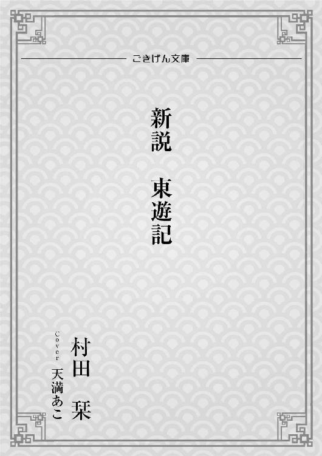

| 新説 東遊記（1） (ごきげん文庫) | |
| 村田 栞 | |
| ごきげん文庫 (2017) | |

本作品の全部または一部を無断で複製、転載、配信、送信したり、ホームページ上に転載することを禁止します。また、本作品の内容を無断で改変、改ざん等を行うことも禁止します。
本作品購入時にご承諾いただいた規約により、有償・無償にかかわらず本作品を第三者に譲渡することはできません。
本作品は縦書きでレイアウトされています。
また、ご覧になるリーディングシステムにより、表示の差が認められることがあります。
霞たなびく春の空に、黒い煙が立ち昇る。
大唐帝国の都、長安の北およそ五里。石塊だらけの渭水の河原で、空を焦がさんばかりの炎が燃えていた。大量に積まれた薪が爆ぜ、バチバチと火の粉が散る。炎の中心にあるのは、浮き彫り装飾が施された豪華な棺で、精緻な文様は無残に焦げ崩れ始めていた。炎の周りには霊符が置かれ、何ものも炎に近づけないように、また、何ものも出られないように、常人には見えない境界が設けられていた。その境界の外に三名の青少年が立っていた。
「悪霊に取り憑かれて狂死とか、最近、物騒な事件が多いね」
「やんごとなき身分のお方と聞きましたが、こんな葬り方をされるとは、何と憐れな......」
「早く燃え尽きねーかな。見てるの退屈なんだけど」
燃えさかる炎を見つめ、彼らは口々につぶやいた。
＊ ＊ ＊
長安から南におよそ三十里、終南山と呼ばれる山の中を羅綺は必死で走っていた。長い髪は乱れ、裙の帯は解けかかり、襦は破れて襟が大きく開いている。
春の盛りの山は木々の緑が眩しく、所々で野バラやサクラが花をほころばせていた。それらの花々に気を取られて山の奥深くに足を踏み入れ、一緒に山菜採りに来た女衆とはぐれてしまったのが、羅綺の不運の始まりだった。
気づけば、若い男たちに取り囲まれていた。みな、弓を手に絹の長袍を身に着けている。狩りにやって来た金持ちの子息だ。
羅綺は目をみはるほどの器量よしではなかったが、今年で十五の乙女である。貧しい農家の娘であれば、手荒な真似をしても許される――と彼らが思ったかどうか、とにかく羅綺は手込めにされそうになった。
しかし、されるがまま大人しくしている羅綺ではない。生来の気丈さと直面した恐怖との相乗効果か、普段ではあり得ない膂力と瞬発力を発揮して、彼らの手に噛みつき急所を蹴飛ばし、大暴れしてその場から逃げ出したのである。
「助けてーー」
落ちかかる裙を片手で押さえ、もう片方の手で枝を払いながら、羅綺は斜面を駆けおりた。
「俺らを誰だと思ってるんだ」
「鹿の代わりだ。射てしまえ」
その声と同時に藪を漕ぐ音が耳に届き、羅綺は肩越しに振り返った。木々の間に追ってくる数名の影が見える。
羅綺は前方に目を戻し、無我夢中で走った。やがて、見知った林道が見えてきた。崖沿いの岩だなを利用して作られた細い道は危険きわまりないが、里へおりる一番の近道だった。矢羽根が風を切る音がいくつか聞こえたのは、その道を駆けおり始めたときだった。
「きゃっ」
足もとを矢がかすめ、羅綺は勢いよくつんのめった。あまりにも急な斜面は、羅綺に体勢を整える暇を与えなかった。足裏から地面の感触が消え、絶叫が喉からほとばしる。崖下の木々や下草が凄まじい速度で近づいてきた。木の枝が折れる音と同時に、額と脇腹に熱い痛みが走る。次の瞬間には全身に激しい衝撃を感じ、息ができなくなった。
『ほう、モミトの言った通りだ』
薄れていく羅綺の意識の中に、何者かの声が割り込んだ。
（さっきのやつら......？）
『若いのは構わんが、女とは......。しかし背に腹はかえられん』
声が近づいてきた。
（逃げなきゃ......）
体を起こそうとしたが、指一本動かせない。視界も真っ暗で何も見えない。
『せめて魂が冥界へ行くまで待ってやろう。乙女の身では、今後の暮らしは辛いだけだろうし』
声は耳元で聞こえた。
（冥界？ 何、言ってるの？）
こんなことで死んだら、亡くなった実の両親にも引き取って育ててくれた隣の夫婦にも申し訳が立たない。
「あたしは死なないわよ......」
声に出したつもりだが、相手に届いたかどうかわからない。実の父母や養父母、近所の幼友達の顔が次々と浮かんでは消え、やがて羅綺の意識は闇に沈んだ。
＊ ＊ ＊
『ふむ。若い娘の体というのは、思っていた以上に張りがあって、しなやかなのだな』
羅綺の耳の奥に、またあの声が届いた。ふいに体の芯からムズムズというかビリビリというか不思議な感覚がわき起こり、それが全身に広がっていく。
（......いや、やめて......くすぐったい）
『ほう、意識と身識があるか。魂が離れていなかったのか？』
（いしきとしんしき？ 何それ......あなた、誰？ って、ちょっと、くすぐるのやめてよ。......あっ......あっ......ああっ）
『しかも、おれの意識と競合している。やっかいだが、とにかく起きねばならん。せっかく相性の良い体を手に入れたというのに』
夢を見ているのだろうか。それにしてもくすぐったい。
まるで肌の上を小さな虫が這っているような、でなければ誰かに指先でさわさわと撫でられているようなこそばゆさが羅綺を苛む。
『また燃やされては敵わん。埋められても這い出るのが難儀だし......。おい、娘、起きろ』
（男の人に撫でられてる!?）
そこで羅綺は一気に覚醒した。
「いやーっ！」
跳ね起きた途端に――
「ぎゃーっっ！ キョ、キョンシー！」
「ええっ？ キョンシーですって!? いやあああっ！」
いくつもの悲鳴が耳に飛び込み、羅綺もつられて叫び声を上げる。
『落ち着け』
「だだだだってキョキョキョンシーよ。ににに逃げなきゃ、ちちち血を吸われて、キョンシーにされちゃうのよ......」
立とうとしたが、腰に力が入らない。
『いいから、とにかく落ち着け。キョンシーなどいない。強いて言えば、お前がキョンシーだ』
「ああ、そうね。キョンシーはこないだ偉いお坊さんが退治したって......え？ ええっ！ あたしがキョンシー!?」
我に返って周囲を見回すと、養父母や里の長である里正、幼友達ほか近所の人たちが恐怖に引きつった顔で、遠巻きにこちらを見ていた。後ずさりした結果、部屋の壁に退路を断たれたような格好で、それぞれ抱き合っている。
そして自分はと言えば、部屋の中央に敷かれた夜具に半身を起こしていたのだが、頭と脇腹には血の滲んだ包帯を巻いていた。
「えーと......」
むずがゆさは治まっていたが、代わりに頭がズキズキと痛み始めた。
包帯の巻かれた頭に手を当て、羅綺は記憶をたぐる。
「あたし、山でドラ息子集団に襲われて......」
「ら、羅綺、憶えているのかい？」
恐る恐るといった感じで問い返したのは養母だった。
「うん。立派な身なりの若い男の人たち......。それで必死で逃げて......矢を射かけられて、足を滑らせたような......」
「あんたをここへ運んでくれたのは、陳さんでね」と、養母は山に住む顔見知りの猟師に目をやった。
「悲鳴を聞いて駆けつけたら、どっかの若いのが走って行くのが見えた。で、羅綺が崖下に倒れてて......」
「そうだったの。陳さん、ありがとう。あのままだったら、あたし熊か狼のエサになってたよね」
「問題はだな......わしが羅綺をここへ担ぎ込んだときには、もう息をしてなくて......」
「俺たち、今、葬式の相談をしてたんだよ」
猟師と養父の言葉に、羅綺は目を瞬いた。
「あたし、死んだの......？」
養父母も猟師も隣に住む幼友達も、そこにいた者すべてが蒼白の顔で一斉にうなずいた。
「でも」
羅綺は自分の手に目を落とす。
昨年暮れ、隣のおばあさんが亡くなったときに、亡骸を間近に見た。亡骸とは違い、この手の平は淡い紅の色をしている。間違いなく血が通っている。頬をつねってみると痛みもある。
「あたし、生き返った......？」
周囲の人々がまた一斉にうなずいた。
羅綺の頭の中に、見知らぬ中年男性の姿が浮かび上がった。白装束を身にまとい、ボウボウの蓬髪に無精髭を生やしている。羅綺には彼がひどくむさ苦しいオヤジに見えた。
『生き返ったのは、おれが取り憑いたからだ』
亡霊とおぼしき中年男性は、そう言って唇の端をつり上げた。茫然自失というのはこういうことを言うのだろう。しばらくの間、羅綺は何も考えられなかった。
（中年オヤジの霊に取り憑かれた......）
『おれは羅公遠。仙人だ。お前のひいひいひいじいさんにあたる』
頭の中で何か言っていたが、羅綺には理解できなかった。
（中年オヤジの霊に取り憑かれた......）
その事実に衝撃を受けすぎて、思考も感情も動きを停止し、声を上げることもできなかった。
『わけあって体を失ったので、借屍還魂の術を用い、お前の体を借りることにしたのだ。なお、おれの声はお前以外には聞こえない。よって、今からおれの言う通りに......羅綺、聞いてるか？』
（中年オヤジの霊に取り憑かれた......）
『まあいい。意思が働かない方が操りやすい』
羅綺の目が勝手に壁際の人々に向いた。
「キョンシーだよ......どうすりゃいいんだよ」
「血を吸われたら、俺らも仲間入りだ」
「けど、キョンシーは昼間は寝ているっていうじゃないか。まだ外は明るいもの。あれは羅綺だよ」
「夜になったら本性を現すんじゃないか」
彼らは青い顔で羅綺の方をチラチラ見ながらコソコソと話をしていた。
「お養父さん、お養母さん、あたし、この家を出て羅公遠という偉くて格好良くて優れた術士であられる天才道士様のもとへ参りたいと思います」
口が勝手に動いた。仙人と道士の違いはよくわからないが、ともかく、このむさいオヤジを、偉くて格好良くて優れた術士の天才道士などとこれっぽっちも思っていないのに、勝手に言葉が出てくる。そんなつもりもないのに、なぜか深々と頭が下がってしまった。
「あ、ああ、そうだね、それがいい」
里正も養父母も、ほっとしたような顔をした。
「慌ただしくて申し訳ありませんが、日暮れ前には出立したいと思います。つきましては、男物の着物を用意してください。旅の途中でまた暴漢に襲われると困るので」
また勝手に口が動いた。
「おお、そりゃ、もっともだ。うちの息子が子どものときに着ていたのを持ってこよう」
里正が足早に自宅へ向かった。
「じゃ、私が旅支度しといてあげるから、あんたはここで休んでなさいな」
養母が母屋へ小走りに駆けて行き、養父も作り笑いを浮かべて、彼女を追いかけるように部屋を出て行った。猟師の陳も幼友達も逃げるようにその場を立ち去る。
（......何なの？ あたし、このうちから出て行かなきゃならないの？）
『連中は日が暮れたらお前が暴れ出して、自分たちもキョンシーにされるのではないかと恐れている。さっさと出て行った方が互いのためだ』
（あたし、日が暮れたら暴れ出すの......？）
『暴れるものか。お前が生き返ったのは、おれが取り憑いたからであって、人を襲って血をすするキョンシーとは別ものだ』
（なら、それをお養父さんとお養母さんにちゃんと説明すれば......）
『説明したところで、お前が一度死んで生き返った事実は変わらん。不気味がられるだけだぞ』
（そう......。別ものでも、あたしはキョンシー......。中年オヤジの霊に取り憑かれたキョンシー......）
自分の置かれた状況を把握するにつれて、徐々に恐ろしさとおぞましさが湧き上がってきた。
「中年オヤジの霊に......ひ～～」
背筋に悪寒が走り、全身に鳥肌が立つ。
「出てって出てって、あたしから出てって！」
どこに取り憑いているのかわからないので、とりあえず体のあちこちを手で払ったり叩いたりした。十五歳の乙女にとって、世の中すべての中年男性は、ただでさえむさ苦しい存在である。少なくとも五尺以上は離れていたい、同じ空気は吸いたくないと思っているのに、彼は羅綺にビタッとくっついて離れないどころか、身体の中に入り込んでいるのである。
『暴れるな、傷に障る』
「傷なんかどうだっていいわよ。おじさん、とにかく出てって」
このままでは、おぞましさで気が狂う。
『おれは伯父ではない。ひいひいひいじいさんだ。今さら別の誰かに取り憑くなど面倒くさい。お前に取り憑くのにだいぶ力を使ってしまったし』
「面倒くさいなんて、そんな理由であたしをこんな目に遭わせるの？ ひいひいおじいさんなのに、ひいひい孫がかわいそうだと思わないの？」
『ひいの数が少ない。おれのことは羅公遠と呼べ。おれが離れたらお前は即座に死んで、魂は冥界行きだぞ。死んだ体が動いているのは、仙人の力なのだからな』
「オヤジに取り憑かれて生きるぐらいなら、死んだ方がましよ！」
羅綺は夜具から飛び出した。山に入ってもう一度崖から飛び降りるか滝壺にでも飛び込むつもりだった。ところが――
「か、体が......」
何とも半端な姿勢のまま羅綺は動きを停止した。足は縫い止められたように床に貼りつき、腕も強ばってしまって動かせない。
「ぐ、ぐぐ」
渾身の力を込め歩き出そうとしたが、自分の体なのにまるでいうことをきかない。
「な、何で......」
『死ぬ前に死なない宣言をしたのはどこのどいつだ。それに、この体は半分おれのものだ。大事にしてもらいたい』
「か、勝手なこと言わないで！ ひいひいひいひいひいじいさんなんかに半分あげた憶えはないわよ！」
『ひいの数が多すぎる。おれのことは羅公遠と呼べと言ったろう』
ドスのきいた恐ろしげな口調で羅公遠は言った。
『言うことをきかなければどうなるか、思い知らせてくれる！』
「きゃああああっ！」
悲鳴が喉からほとばしり出た。
一方、母屋では養父母と里正が額をつき合わせて話し合っていた。
「大人しくしているうちに、首をはねて埋めてしまおう」
「そ、そんな可哀想なことできないよ。あれは羅綺だよ」
「亡骸に取り憑いた悪霊が、羅綺のふりをしているのかもしれん」
「下手に手を出したら祟られ――」
そこへ、離れの羅綺の部屋から悲鳴が聞こえてきたのである。
「ら、羅綺！ どうしたの！」
養母が駆け出した。養父と里正もその後に続く。
「危ない！ 近寄っちゃだめだ」
部屋へ飛び込もうとする養母を、養父と里正が抱え込む。
「いやあ、やめて！ お願い！ きゃは！ きゃはははっ！」
そこで三人が目にしたのは、自分で自分をくすぐり身もだえている羅綺の姿だった。
里正は手にしていた男物の服を放り出して、その場から逃げだした。そして養父母は、「だめだ、俺らの手には負えん......」と、日のあるうちに羅綺を里から出すことを決意したのだった。
「うう......ひっく」
羅綺はしゃくり上げた。
「いったい、どうしてこんなことに......あたしに何の罪があるっていうの......」
『おれが体を失って困っていると、知り合いの仙女がお前が死ぬと予知したんだ。おれはお前の魂が離れてから取り憑くつもりだったんだぞ。こんなことになったのは、お前が生きることに執着したせいだろうが』
手が勝手に動き、裙の帯を解き始めた。
「何で、あたしなわけ......？」
『魂と魄......肉体には相性があってな。多少なりと血がつながっていた方が取り憑きやすいからだ』
「あたしに取り憑いて、何をさせるつもり......？」
『仕事が山積みなのだ。体がなくてはできないことも多い』
「そんな、あなたの都合で......」
羅公遠のなすがまま裙を脱いだところで、羅綺ははたと気がついた。
「ちょっと羅公遠！ あなた何してるの!?」
『男物の服に着替えるつもりだ』
手が襦の紐を解きにかかった。
「も、もしかして、あなた、あたしが見える？」
『おれにはお前が見える物しか見えん。従って、お前が触れた物の感触はおれにも......』
「ちょっと待って！ その手、止めて！」
『気にするな。ひいひいひい孫の裸体などに興味はない。おれはどちらかというと、熟女が好......』
「止めてったら！」
本気で怒っているのがわかったのか、手が動きを止めた。
「自分で着替えるから、あなたは引っ込んでて」
『はいはい』
手の自由がきくようになった。
羅綺はできるだけ自分の体を見ないように、また、素肌に触れないように気をつけて襦を脱ぎ、男物の上着と細身の袴を身に着ける。頭の隅で『お前が思うほど、おれは好色ではないのだがな』と、羅公遠がブツブツ言っているが、羅綺には彼の言うことが信用できない。
頭を怪我しているので髪は髷に結わず、首の後ろでしばるだけにしておく。
そうしているうちに養父母が布包みを抱えてやってきた。戸口に立つ二人は腰が引けていて、唇が震えていた。当然、部屋の中には入ろうとしない。
「着替えとお前の椀と匙だ。お前の実の父母の形見も入れておいた。それから少しだが路銀を......」
養父は大きな布包みを戸口の前に置き、その上に小さな巾着を載せた。
「お養父さん......」
養家は決して裕福ではない。働いても働いても租税で持っていかれてしまうからだ。キョンシーになってしまった養女に、わずかな蓄えを分けてくれた養父の心遣いが嬉しかった。
「これはあんたの好きな青梗菜の包子だよ。途中で食べるといい」
そう言って竹の皮の包みを巾着の横に置いた養母は、目を真っ赤に泣きはらしていた。
「ありがとう......」
荷物を取ろうと足を前に出すと、二人はそろって二、三歩後ずさった。それが今の羅綺と養父母との距離。抱き合って別れを惜しむことはできない。
日用品の入った布包みを肩に斜めにかけて背負い巾着を懐に入れる。竹皮の包みを手に持って、羅綺は養父母の前にひざまずいた。
「長い間お世話になりました。父母亡き後、今まで育ててくださったご恩は一生......」
その後は声にならなかった。
「気をつけて。偉い道士様が悪霊を祓ってくれるといいね」
「もう二度と死ぬんじゃないぞ」
口を開けば涙声しか出そうもないので、羅綺は黙ってうなずき立ち上がった。
養父母が道を空け羅綺は表へ出た。日はすでに西に傾き、空は朱色に焼けていた。
近所の人々が戸口から不安げな顔を出していたが、羅綺の姿を見ると、サッと頭を引っ込めてバタンと戸を閉めた。
脇腹に傷を負っているせいか体に力が入らず、羅綺は足を引きずるようにして歩いた。進むに連れ次々と戸が閉じられていく。その中には姉妹のように育った幼友達もいた。
もうこの里には戻れない――と、そう思い知らされた。
『これがお前の運命だ。生き返ったとたんに首をはねられなかっただけましだと思え』
羅綺の思いを察したのか、頭の隅で羅公遠の声がした。
「うん......」
羅綺はこぼれ落ちた涙を指でぬぐった。羅公遠に取り憑かれなければ魂は冥界へ、体は土の中だ。どちらにしろ養父母や友人たちとの別れは避けられなかったのだ。
「実の父さんと母さんに死なれたときのことを思えば、何てことないわ」
そう思っているにもかかわらず、涙が止めどなくあふれ出てくる。
集落を離れ森の中の馬車道に出る。歩くうちに日が沈み、夕闇が迫ってきた。
やがて森が開け、眼下に関中の平原が広がった。手前には少陵原と呼ばれる丘陵地帯、中央には長安の都、都の向こうには渭水が流れている。
渭水は烏鼠同穴山に源を発し、周や秦の発祥の地である宝鶏を経て咸陽から長安の北に至り、黄河に注いで、果ては東の海にまで流れ着く。その長さは二千里余にもなる大河だ。しかし、十三日の月は雲に隠れ、宵の平原には青い闇が落ちているばかりで、壮麗な都も滔々たる渭水も見えない。
羅綺は、暗闇が嫌いだった。また、先が見通せないのも不安だ。けれど、それを嘆いたところで運命が変わるわけでもない。
「そう、何てことないわ......。朝が来れば、また日が昇るもの」
闇に沈む平原を見つめたまま羅綺がつぶやくと、頭の隅で羅公遠が笑う気配がした。
その晩は少陵原で一夜を明かすことになった。羅公遠の屋敷は長安郊外にあり、ここから半日ほどの道のりだというが、傷を負った体では夜を徹して歩けそうもなかったからだ。
少陵原は長安に住む貴族の墓場で、小高い丘のように土を盛った墳墓が点在し、墳墓の横腹には大きな門が設けられていた。その中でも特に新しくて立派な門を選び、羅綺は背に負っていた布包みをおろした。
「夜のお墓って不気味......」
墳墓の入り口は厚い木の扉できっちり閉ざされていたが、今にも開いて何かが出てきそうな気がする。
『死人が墓場を怖がってどうする』
「それもそうね。あなただって幽霊だし」
そう言いながら、養父が荷造りしてくれた布包みを開ける。荷物の中に火打ち道具を見つけたので、羅綺は木の枝や枯れ草を集めることにした。
『幽霊ではない。せめて尸解仙と言ってもらいたい。非常に不本意だがな』
「しかいせん？」
『肉体を持たない仙人のことだ』
「体がないなら幽霊と同じじゃない」
『迷って出てきた死霊と一緒にするな。おれはれっきとした仙人だ。不老不死を会得したが、昨日、体を失った。それで借屍還魂の術を使ってお前に取り憑いた』
「さくしこんこん？」
『借屍還魂。遺体を借りて魂を還す』
「体、どうしちゃったの？」
『大人の事情だ。お前が知る必要はない』
「ふーん」
頭ごなしに言われるのはいい気分ではないが、また自分で自分をくすぐるような事態に陥りたくない。
集めた枯れ草と枯れ枝を屋根の下に運び、適当に積み上げる。
『手際がいいな』
「農家の養女だもの」
火打石に火打金を打ちつけたが、腕に力が入らず火花が飛ばない。
『おれがつけてやろう』
突然、右手の自由がきかなくなった。羅綺の意思とは関係なく手の平が積み上げた枯れ草に向けられる。手の平がじわりと熱くなり、次の瞬間には枯れ草にポッと火がついた。
「わお、すごい。さすがは仙人」
『そうでもない』
手が握ったり開いたりを繰り返した。
『やはりお前の体では十分に神通力が発揮できない。お前が怪我をしているせいもあるだろうが』
「勝手に取り憑いておいて何言ってるの」
手の自由が戻ったところで、羅綺は枯れ枝をくべた。火の明かりと暖かさにほっとさせられる。
『包子を温めて食べたらどうだ』
「食欲ないわ」
『腐らせたらもったいないだろう。養母の心遣いを無にするな。それに、食べなければ傷も治らん。仙術で痛みと出血を抑えているが、お前は死に至るほどの怪我をしたのだぞ』
「うん......」
羅綺は素直に竹の皮の包みを解き、同梱されていた竹串に包子を刺してたき火であぶる。ほどよく焦げ目がついたところで、ちぎって口に入れた。香ばしい小麦粉の香りが鼻をくすぐり、甘辛く味つけた青梗菜の汁が舌の上に広がった。
肉など入らない、貧しい農家の味――
慣れ親しんだ味が羅綺の涙腺を緩ませた。急に目の奥が熱くなり、涙が出てきた。いつも以上に咀嚼したが、喉の奥に何かの塊が引っかかっているようで、なかなか飲み込めない。
『お前の父親に取り憑くことができればよかったのだがな。相性も悪くなかっただろうし、年格好も似ていただろうし』
羅綺の感情の高ぶりが伝わったのか、羅公遠の声には哀れみの色が混じっていた。
「とっくに骨になってるものね」
『なぜ死んだのだ？』
「十二年前の飢饉のとき、里に疫病が流行って......」
飢えが体力を削ぎ、疫病を蔓延させたと羅綺は養父母から聞いている。
「でも、あたしは発病しなかった。たぶん、父さんと母さんは、自分たちが飢えてもあたしには食べさせてくれたんだと思う。お前は父さんと母さんから命をもらったんだって、よく言われたもの。だからあたしは、命を粗末にできない」
羅綺は包子を無理矢理飲みこみ、また新たにかぶりつく。
『一度は死んだくせに魂が体に戻ってきたのは、そのせいだろうな。おれの血を継いで仙人の素質があったにしても、大した執着だ』
「素質か......。あたしも仙人だったらよかったのに」
羅綺の一番古い記憶は、やせ細って床に伏す両親と乾いてひび割れた田畑だ。雨を降らせたり病を治したりする術が使えたら、どんなにいいだろう。
『お前は今日から仙人だ。仙人・羅公遠になるのだ』
「は？」
『仕事が山積みと言ったろう』
「働くのは構わないけど、羅公遠になる......って？」
『何でわざわざ男の格好をさせたと思っている。これからお前には、おれのふりをしてもらう』
「え？ ええっ!?」
喉の奥の塊が一瞬にして消え失せ、涙も止まった。羅綺は口の中の包子をゴクリと飲み下す。
「も、もしかして、そのためにあたしに取り憑いた？」
『今ごろ気づいたのか。思った以上に頭が悪いな』
「だ、だって、どうがんばったって、あたしが中年オヤジに見えるわけないでしょ」
『若返ったことにする』
「それって不自然。絶対に変。正直に借屍還魂の術を使って女に取り憑いたって言えば......」
『いいか、おれは不老不死を会得した仙人だ。体を失って仕方なく少女に取り憑き、しかもその少女の魂が体に残っていたなどと言えるか。弟子たちにバカにされ仕事の依頼が減るだけだ』
「け、けど......男として生きるわけ？ これからずっと？」
『別の体が見つかったら出ていってやるさ。ただし、それには条件がある』
「条件？」
『修行して不老不死を会得しろ』
「何で不老不死？」
『おれがお前から出ていけば、お前が死ぬからだ。さすがにひいひいひい孫を殺すのは忍びない』
「あたし、もう死んでるけど......」
『不老不死を会得して自分に借屍還魂の術をかければ、おれが出て行ってもお前の魂が冥界へ飛んでいかずに済む』
「死んでから不老不死を目指すって......」
何か変だ。無理難題を押しつけて、この体に居座るつもりではないだろうか。
『ちなみに、屋敷には三人の弟子が住み込んでいる。三人とも血気盛んな若い男だ。万一女だとバレてみろ......』
「ひ～」
羅綺の脳裏に終南山で襲ってきた若者たちの下卑た笑顔が蘇る。手込めになんかされたくない。
『ま、そういうわけだ。食ったら寝ろ。火の番はおれがしてやる。と言っても、使うのはお前の体だがな』
（中年オヤジのふりして青年たちと暮らす......）
目眩がしてきた。
羅綺は布包みから袷の上着を引っ張りだし地面に敷いた。
（そうだ、寝る前に......）
辺りに人がいないか見回し、あらためて気づく。どんなに人目をはばかったところで、中年オヤジはついて回るのだ。
「あり得ない、信じられない」
羅綺は憤然と立ち上がり、たき火から離れた。
『どこへ行く？』
「小用を足すの。見ないでよ」
『言ったはずだ。おれにはお前が見える物しか見えないし、お前が触れる......』
「黙ってて。こういうときは、いないふりしてて」
『はいはい』
その夜、羅綺は久しぶりに実の父母の夢を見た。極楽浄土のような美しい場所で、父母と三人で田畑を耕している夢だ。空は青く晴れ渡り、日差しが眩しかった。種まきを終えると、羅綺は仙人の術を使って雨雲を喚んだ。優しく降る雨に大地は潤い、見る間に作物が育った。父母は笑顔でその様子を眺めていた。飢えや病とは無縁の夢だった。
＊ ＊ ＊
羅公遠の屋敷に着いたのは翌日の午後だった。
「何だか、お化け屋敷みたいね......」
門前に立ち羅綺はつぶやいた。構えだけは立派だが、門柱は朽ちかけて屋根が傾いている。周囲に人家はなく、うち捨てられた田畑と思われる荒野が広がるばかりで、一層不気味である。
『先の宰相、李林甫の別宅だ。やつの死後、国が没収したのだが、住む者がいないので拝借している』
周囲の土地も李林甫の永業田だったが、朝廷が召し上げた後、一度は口分田として耕作されたが税が納められず、農民が逃げてしまったという。
「あたしが住んだら、正真正銘のお化け屋敷になっちゃうわね」
門をくぐり奥へ進む。庭も荒れ放題で、雑草の合間に辛うじて敷石が見えるといった有り様だ。母屋のほかにいくつか離れがあるようだが、伸びすぎた植木の枝が視界を遮り全容はわからない。
『まずは弟子たちに、お前が羅公遠だと信じさせる必要がある。しばらくの間おれに任せろ』
足が勝手に歩みを速めた。敷石を伝って母屋の玄関口まで来ると、乱暴に扉を押し開け、「帰ったぞ」と大声で告げる。しかし返事はない。
屋内もまさにお化け屋敷だった。
（あたし、ここに住むわけ？）
明かり取りの窓は蔦の葉がはびこり廊下は薄暗かった。床にはホコリが積もっていて、天井から蜘蛛の巣が垂れ下がっている。羅公遠はいかにも無精そうだが、住み込みの弟子たちも無精なのだろうか。
（こんなんじゃ嫁が来ないのも無理ないわね）
『何で独身前提なんだ。おれにもかつては妻も子もいた。だからひいひいひい孫もいるんだ』
言われてみればその通りだ。こんな無精なオヤジに嫁いでひいひいひいおばあさんはさぞ苦労したことだろう、気の毒に。
（あ～、お掃除したい～）
どこへ嫁に行っても恥ずかしくないようにと養父母から家事全般仕込まれたせいか、掃除への欲求が高まってくる。
「おい、刀郎、紫薇、哥舒慎」
羅公遠が弟子と思われる名を呼んだ。ホコリにはいくつもの足跡があるので無人ではないのだろうが、誰も出て来ない。
「おかしいな。みな出払っているのか？」
羅公遠はホコリを巻き立ててツカツカと奥へ進む。いくつもの角を曲がり、物置のような部屋を通り抜け、突き当たりの戸を一気に引き開けた。
「誰だ！」
誰かの声と「何をしている！」という羅公遠の怒鳴り声が重なった。声は羅綺のものなので迫力はない。
その部屋は、これまで通過してきたどの部屋よりも散らかっていた。衣類も書物も何もかもが放り出されて床に散乱し、物入れや文箱をあさっていたと思われる男が三人、手を止めてこちらを見ている。
（ど、泥棒!?）
思わず心の中で叫ぶと、『いや、弟子たちだ』と羅公遠が答えた。
（弟子？ この人たちが？）
掃除をするどころか散らかすなんて、いったいどういう弟子だろう。
「誰に断って入って来た」
そう言ったのは羅綺と同じぐらいの歳に見える少年だった。
西方の異民族なのか色白で灰色の目をしていて、なかなか見目麗しい。茶色の長い巻き毛を背中でざっくりしばり、藍染めの布を頭に巻いて首の後ろでしばっている。身に着けているのは道士が着る袍で、やはり藍染めだ。彼は文箱の中身をあらためていた様子だった。
「自分の屋敷に入るのに断る必要などなかろう」と、羅公遠が答えた。
「自分の屋敷？」
物静かな声に、羅綺の目が物入れの天袋に手を伸ばしていた長身痩躯の青年に向く。
黒い前開きの法衣を着ているところを見ると、僧侶なのだろうが剃髪はしていない。黒い髪を髷巻きにして笄をさしている。髪型も漢人ぽいが顔立ちも典型的な漢人で、切れ長の一重まぶたと薄い唇には何となく気品が漂っている。
「きみ誰？ ここは羅公遠の屋敷だよ」
そう言ったのは衣装箱をかきまわしていた青年だった。
南方の出身だろうか、ずいぶんと肌の色が濃い。歳は法衣の青年と同じぐらいに見える。髪は、この国ではあり得ない短髪で、貌の彫りが深く、大きな目を縁取るまつげも濃い。しかも目尻からこめかみにかけて細い刺青が入っている。服装は生成りの袖なし上着に膝丈の細い袴だ。寒くないのだろうか。
「おれが羅公遠だ」
羅綺の目が偉そうに三人の若者を見据え――
「羅公遠？」
若者たちは、そろって驚いたような声を上げた。
「いくら若返ったからといって師匠の顔もわからんとは、情けない弟子どもだ」
わからなくて当たり前である。女だし。
「若返った!?」
「あり得ません。師匠は子どもの姿では威厳がないからと、常に四十代の姿を保っておりました」
「羅公遠の隠し金を狙って忍び込んだこそ泥が、とっさにでまかせ言ってるんじゃない」
三人は手にしていた文箱や衣類から手を放し、軽く腰を落として身構えた。
「おれは羅公遠だと言ってるだろうが。刀郎......」
羅綺の指が茶髪に灰色の目の少年をさした。
「お前、親の形見の小刀を捜しているのか？ それなら書棚の後ろだ。これに懲りて、昼寝中はおれを的にして小刀投げの練習なんかするなよ」
「どうしてそれを......」
少年は目を丸くし書棚へ駆け寄ると、後ろから小ぶりの直刀を取り出す。
「本当にあった......」
彼は唖然として小刀と羅綺とを見比べる。
（ちょ、ちょっと、あの刀郎って子、小刀投げてくるの？）
『なりは小さいが、あれでも十七だ』
（あたしより歳上!?）
『拾ったときは漢語がまったく通じなかったから、あの小刀にちなんで刀郎と名づけた』
（拾い子......）
歳の割に小柄なのは、幼いときに満足に食べられなかったせいかもしれない。
「哥舒慎」
次に羅綺の指は色黒短髪で目尻に刺青の入った青年をさした。
「おれのへそくりを持ち出そうとしていたのか？ 賭博で負けが込んだか？」
「えーと、何でそんなこと知って......いやいや、別に師匠のへそくりを盗もうとか、そんなつもりはなかったけど」
哥舒慎は衣装箱から離れて大きな目を瞬いた。
『たとえ女だとバレなくても、やつは男でも女でも猫でも犬でも、気に入れば口説きにかかる。敬愛する師匠が若返ったとなれば――』
（敬愛？）
どこからそんな自信が生まれるのかわからないが、とにかく哥舒慎には隙を見せないように気をつけよう。
「紫薇」
最後に羅綺の指先は法衣の青年に向いた。
彼は切れ長の目を細め、唇にあるかなしかの笑みを浮かべていた。何だか仏像っぽい。
「清廉潔白、謹厳実直、四角四面を絵に描いたようなお前が、哥舒慎に荷担しておれの私物をあさるとは思わなかったぞ」
「私を清廉潔白、謹厳実直と仰るとは......」
青年は端正な眉をひそめた。
（紫薇って頭は丸めてないけど、お坊さんでしょ？ 何であなたに弟子入りしたの？）
『退魔の素質があるのでな。助手として使おうと思って出家する前にさらった。それでも仏の道をあきらめないので、嫌がらせに仙道の神、北極紫微大帝をもじって紫薇と呼んでいる。本名は張濛。やつの父親は皇帝の信任も厚い大貴族だ』
（貴族の御曹司をさらった......）
大胆不敵というか非道というか、十五の乙女をキョンシーにするだけのことはある。
三人の青少年は顔を見合わせ――
「小刀の隠し場所、師匠以外は知らねーはず」
「僕が借金まみれってのも師匠しか知らないはずなんだけど」
「若返りの術に失敗して、うっかり子どもになってしまったのでしょうか」
とこそこそ話し合っていたが、「どうも本物の師匠らしい」という結論に達したようだ。
「小刀が見つかってよかったぜ」
刀郎は喜んでいたが紫薇の顔からは笑みが消え、哥舒慎はあからさまに苦い顔をしてチッと舌打ちした。
師匠の帰還を歓迎していないようだ。無理もない。
「早速ですが師匠、食費をいただきたく思います。ツケが滞り、もうどこの店でも何も売ってもらえないのです。師匠のお部屋を捜索させていただいたのはそのためです」
紫薇がそう言って恭しく合掌した。
「そうそう。決して、へそくりを猫ばばしようとしてたわけじゃないんだよ」
哥舒慎があえてつけ加えた。かえって怪しい。
「なぜ、おれが帰るまで待っていなかった」
「待つつもりだったさ。けど、帰る予定の日を過ぎても音沙汰なしだし、腹減ったし。で、興慶宮まで出向いて問い合わせたら、師匠は当分の間、帰れねーって言われたからさ」
と、答えたのは刀郎である。
「誰がそう言った？」
「宦官だった。誰に仕えてるかはわかんねー」
「ふむ」
羅公遠が眉をひそめた。おでこに皺の痕が残ったら嫌だ。
「ならば仕方ない」
と、彼は窓際に置かれた木箱に向かった。ふたのない浅い木箱には砂利が敷き詰められている。砂利からはプンと鼻をつく刺激臭。
（こ、この臭いは、うんちとおしっこ......な、何でこんなところに......）
『猫の厠だ』
羅公遠が砂利をかきまわした。
（ぎゃー！ ら、羅公遠、やめて！ 一応は、それ、あたしの手だから）
指先に金属の感触があった。それをつかみズルズルと引っ張り出す。糞尿にまみれて出てきたのは、穴に紐を通してつなげてある銅銭――開元通宝だった。
「そ、そんな所に......」
三人の青少年があんぐりと口を開けた。
「次は隠し場所を変えるからな。猫ばばしようとしても無駄だぞ」
しゃれのつもりだろうか。
羅公遠は紐を解いて銅銭を何枚か外し、三人に差し出した。しかし、誰がそれを受け取れるだろう。
「いらんのか？」
「い、いる。いる。そのままちょっと待ってて」
刀郎はそう言うと、木箱の横に置かれた木べらを手に取った。猫の糞をすくい取るのに使うのだろう。羅公遠がその上に銅銭を載せると、刀郎は木べらを持ったまま部屋を出て行った。
（お願い羅公遠、今すぐ手を洗って）
羅綺の嘆願を無視し、羅公遠は残りの銅銭を手にしたまま「さてと......」と、紫薇に向き直った。
「おれの留守中に何か変わったことはなかったか？」
「特にありません。霊符を買いに来た者が十八名、霊薬を買いに来た者が三名、火葬の依頼が四件。祈祷を頼みに来た者が五名おりましたが、師匠が留守なので出直すよう言っておきました。通いの弟子たちの鍛錬は、私と哥舒慎とで対応いたしました」
「火葬と祈祷を依頼した者の控えはあるか？」
（そんなことより、とにかく手を洗って）
「そちらの台帳に」
紫薇が書卓の上の紙束を指し、羅公遠は無造作に手を伸ばす。
（手を洗ってって言ってるでしょ！ そんな汚い手であちこち触っちゃだめっ！）
台帳の手前で手が止まった。手を洗いたいという羅綺の切なる欲求が羅公遠の意思と拮抗しているのか、手は空中で止まったまま動かなくなった。
『わかったから力を抜け。紫薇や哥舒慎に怪しまれる』
羅公遠は渋々といった様子で裏庭へ出た。紫薇がついてきてすかさず手水鉢の水を柄杓ですくう。
『いちいち細かいな。農家の娘なら牛馬の糞に触ったことぐらいあるだろう』
羅公遠は心の内でブツブツ文句を垂れた。
（そういう問題じゃないわよ！ ついでにお金も洗って！）
『はいはい』
持っていた銅銭をジャラジャラと洗っていると、紫薇が「ようございました。これで安心してツケが払えます」と、仏像のような笑みを深くする。
部屋へ戻って窓際に銅銭を干し、羅公遠はあらためて台帳を手に取った。
「火葬した四名のうち、一名は姓名も年齢も不詳となっているが、どこからの依頼だ」
台帳の表紙をめくり羅公遠は尋ねた。
「死人の身元を気にするなんて珍しいね。持ち込んで来たのは左衛の兵士だよ」
哥舒慎が散らかした衣装箱をダラダラ片づけながら答える。
（左衛？）
羅綺の心のつぶやきが届いたのか、羅公遠は『南衙禁軍の......つまりは宮中の警護をしている兵だ』と応じた。
宮中から仕事の依頼が来るなんて、羅公遠は意外にやり手の道士かもしれない。
「棺の中をあらためなかったのか？」
羅公遠は、さらに哥舒慎に尋ねた。
「ふたを開けるなって言われたんだよ。亡くなったのはやんごとない身分のお方で、本来は陵に埋葬されるべき人だけど、悪霊に取り憑かれて狂死したから悪霊ごと火葬したいってことでね、棺も厳重に封印されてたし......って、何か気になる？ 普段、遺体を焼くのは僕たちに任せきりじゃない」
「いや、別に......」と、羅公遠は台帳を一枚めくった。
「五件の祈祷の依頼のうち、一件は家内安全、一件は死んだ嫁が夜な夜な訪れるのを何とかしてほしいか。ま、これは大したことはないな」
（大したことない!?）
死んだ人が毎夜現れるなんて大変なことではないだろうか。遺族はさぞや恐ろしい思いをしているに違いない。他人のことは言えないが。
「あとの三件はみな長安在住で、鬼の瘴気にあてられたとなっているが......」
「三件とも深夜、長安の朱雀門街で人形の化け物を見て、その直後に病に陥ったと申しております」
と、紫薇は答えた。
「病は重態なのか？」
「疲労倦怠感がひどいとは言っていましたが」
「鬼を退治しなければ病は治らんが、すぐに死に至るのでなければ、まずは祈祷するふりをして祈祷料をせしめ、その後で鬼退治をするべきだな」
（せしめる!?）
何という悪徳道士。こんなのがご先祖だと思うと情けない。亡くなった父が聞いたら、きっと泣く。
「仕事熱心なのはいいけどぉ、まずは傷を治療したらどう？」
鼻にかかった艶っぽい女性の声がした。住み込みの弟子は男ばかりのはずだから、通いの弟子だろうか。
羅公遠が振り向き一匹の猫に目を留める。
きれいな三毛猫だ。左目の周りは黒、右目の周りは茶色、口元は白で、背中は黒と茶色にきっちり色分けされていて、腹と足の毛は真っ白だ。銅銭が埋まっていた厠の主だろう。
（美猫だー。うんちは臭かったけど）
しかし女性が入ってくる気配はない。
「お帰りなさぁい羅公遠」
猫がこちらを見上げた。
「ああ、モミト、ただいま。そうだったな、この体では無理は禁物だ」
（え？）
妖艶な声が三毛猫から発せられたように聞こえたし、羅公遠もその猫に答えている。
「そう言えば師匠、額に布を巻いているのは、おしゃれじゃなくて包帯？」
哥舒慎が羅綺の頭に目を留めた。
「今ごろ気づいたのぉ？ 哥舒慎、早く手当してあげなさいなぁ」
（ね、猫が喋った!?）
「モミト姐さん、いつになく師匠に優しいね。いつもなら舐めときゃ治るとか言うくせに」
（しかも弟子に姐さんと呼ばれてる!?）
「そりゃあ四十男じゃ労る気もおきないけどぉ、今の羅公遠は子どもだもぉん。それに、いくら羅公遠でも自分のおでこは舐められないでしょ」
モミトが羅綺の足に頭をこすりつけた。しっとりツルツルの毛並みで大変に心地よいのではあるが――
（も、もしかして、化け猫......？）
『中身は、孟芸子という仙女だ。借屍還魂の術で猫に取り憑いた。前の体を失ったとき、他に相性のいい遺体が近くになかったそうだ』
（そ、そうなの......）
語尾が間延びするのは喉のつくりが猫だからだろうか。人間よりも猫との相性がいいなんてどうかと思うが、とにかく魂と体の相性というのは難しいものらしい。
「師匠、そこへ座って」
モミトに気を取られている間に、哥舒慎がどこからか薬箱を持ってきた。羅公遠に操られるまま羅綺は書卓が置かれている木製の壇に腰かける。哥舒慎が羅綺の前に立ち、額の包帯を外し始めた。鼻先に青年の帯が触れる。
（ちょ、ちょっと、近いんですけど）
「なんか女の子の匂いがする。師匠、遊んできた？ 怪我してるのに？」
（ぎゃー、匂いかがないでー）
「まあな。美少年に目がない女がいてな」
（やだー。これだから中年オヤジは嫌いだー）
「うわ、師匠、皮がめくれて骨が見えてる。しかも骨にヒビが入ってるし。どこでこんな怪我してきたの？ よく死ななかったね」
（いえ、死にました）
「不老不死だからな」
偉そうに答える羅公遠に、「輪廻から外れ煩悩にまみれたまま永遠に生きなければならないとは、お気の毒なことでございます」と、紫薇が合掌する。
「皮をかぶせて縫っとくけど、師匠に麻酔は必要ないよね。麻沸散の在庫あるけど」
（縫う!?）
羅綺はギョッとした。
『哥舒慎には医術の心得があるのだ。方術だけでなく、西方や南方由来の怪しげな治療も行う。ちなみに趣味は解剖』
（ひ～）
額にチクリと針の感触がする。羅公遠が痛み止めの術を使っているせいか痛くはないが、皮膚を針と糸で縫われていると思うとものすごく怖い。
「傷のとこハゲるかも」
哥舒慎は楽しそうだった。
（男の価値は髪の量とは関係ないって今まで思ってたけど、髪が薄くなったって気にしてたお養父さんの気持ちがわかる......）
羅綺は心の中で涙する。
額の傷を縫い終わると、哥舒慎は変な匂いの薬を塗った。新しい包帯を巻き直す間に、羅公遠が「脇腹にも傷を負った」と上着を脱ぎ、肌着を胸までまくる。
（ええ～～っ！ らら羅公遠、そそそんなことしたら女だって......）
羅綺はまたギョッとした。
しゃがんだ哥舒慎が脇腹の包帯を外し始める。
（だ、だめ......ち、乳が見え......）
「うわ、細っ。師匠、子どものときよっぽど貧しい暮らしをしてたんだね」
しかし、哥舒慎は羅綺の胸に気づかなかった。
喜んでいいのか悲しんでいいのかわからない。不慎さんと呼んでやりたい。
「こっちの傷かなり深いね。これじゃあ治癒の術を使っても治るのに手間がかかるよ」
彼は何かの呪文を唱えながら文字のような模様のようなものが書かれた紙を傷口に貼る。
「では僭越ながら、傷から悪霊が入らないよう、私が一曲......」
いつの間にか紫薇が床に腰をおろし琵琶を抱えていた。
「いや、いい。悪霊が入り込んだら自力で追い出す」
なぜか羅公遠が動揺した。
「遠慮なさらず。慈悲の心は仏の道」
（そうよ。せっかくそう言ってくれてるんだもの。あたし聴きたい）
琵琶を持った旅芸人を見かけたことはあるが聴いたことはない。
『紫薇の琵琶は悪霊には効くが――後悔するぞ』
どういう意味だろう。
弦の張り具合を確かめているのか、紫薇は弦を軽く鳴らしながら竿の上部の突起をねじった。やがて、彼は優雅な手つきでバチを構え弦を弾いた。柔らかで哀切な音が大気を裂く。空気の匂いまでが変わったような気がした。よく手入れされた左の指が竿を押さえ、バチが弦を掻き鳴らす。美しく力強い調べが時には高く、時には低く、うねって寄り合って天へ昇って行く。
（すごい......）
この琵琶の音を聴いたら、どんな悪霊でも成仏しそうだ。
（何で後悔？ 羅公遠、もしかしてあたしが成仏しやしないか心配してるの？）
『いや。おれとしてはお前の魂がこの体から出ていってくれた方がありがたいが、残念ながらお前は悪霊ではないからな』
（だったら何で？）
『もうすぐわかる』
怪鳥の鳴き声か、はたまた断末魔の叫びかと思われる声が轟いたのは、そのときだった。
紫薇の歌声だと理解するまでには、一呼吸ほどの時間がかかった。楽の知識も感性も皆無の羅綺にさえ、声と琵琶とがまったく合っていないことがわかる。
音程もひどいが声の質もひどい。琵琶の音色との落差に驚きを通り越して感動さえ覚える。
哥舒慎も治療の手を止めて耳をふさいでいた。モミトも床に伏せ器用に前足で耳を押さえていた。
（琵琶で成仏しなかった悪霊は、この歌声で滅せられるのね......）
『出家する前にさらってきたのは正解だろう？ この声で声明を唱えられては仏も迷惑だ』
羅公遠と羅綺が心の中でそんな会話をしていることなど知るよしもない紫薇は、琵琶を掻き鳴らしながら気持ちよさげに歌っていた。
そこへ片手に猫の糞取り用へら、もう片方の手に大きな麻袋を抱えた刀郎が戻ってきた。
（無事にお買い物できたのね）
糞つきの銅銭を出されてお店の人はさぞ迷惑したことだろう――などと考えていると突然、刀郎がこちらを振り向きざま手に持っていた糞取り用へらを投げた。
（ひ～っ！）
羅綺は凍りついたが、羅公遠は動じず軽く首を傾けた。こめかみの一寸先をかすめ、へらが猫の厠の砂利に突き刺さる。
刀郎はチッと舌を鳴らし、無言で踵を返した。羅綺は呆然と彼の後ろ姿を見送る。
（あたし、こんな人たちと一つ屋根の下で暮らすのね......）
刀郎は糞へらを投げてくるし、哥舒慎は皮膚を縫うとき楽しそうだったし、今も紫薇は破壊的な自分の歌声に陶酔しているし、猫は喋るし――
『刀郎は普段おれに向かって小刀を投げてくるんだ。おれが怪我してるのを知って手加減したんだな。人を思いやる心が育ってきた証拠だ』
暗澹たる思いの羅綺とは逆に、羅公遠は嬉しそうだった。
『おれはしばらく寝る。あとは任せた』
羅公遠の気配が遠のいたのは、傷の治療が終わり紫薇と哥舒慎が部屋を出て行ってから間もなくのことだった。とたんにどっと疲労感が襲ってくる。
（この疲れは紫薇の歌声のせいだけじゃないような......）
ヘナヘナと壇に突っ伏すと――
「やっぱりぃ、普通の女の子の体を仙人が動かすとぉ、あちこち無理がかかるのねぇ」
金色に光る目で羅綺をじっと見つめモミトが言った。
「モミトさん、あたしのこと知って......？」
羅綺はギョッとして顔を上げた。
「見た目は猫でもぉ、一応は仙女だもぉん。霊視ぐらいできるわ。そもそも終南山であんたが死ぬって羅公遠に教えたのは、ア・タ・シ」
と言いながら、モミトは前足を舐めては顔をこする。
見事な猫っぷりだ。
「あたしが死ぬって予知した仙女って、モミトさんのことだったの......」
生かしてくれてありがとうというべきか、余計なことをしてくれたと怒るべきか。
「予見って言ってもぉ、何もかも完璧にわかるわけじゃないけどねぇ。一つの体に二つの魂が宿るなんてアタシだってびっくりだわよぉ。まぁ、そうは言っても羅公遠をそそのかした事実は変わらないものねぇ。アホ弟子の誰かがあんたの正体に気づいて寝室に忍び込んでこないよう、せいぜい見張っててあげるわよぉ」
「そ、その節はよろしく......です」
「ただしぃ、未来が見えてもぉ、防げないことも多いのぉ。万一のときはごめんなさいねぇ、先に謝っとくわぁ」
「そんな～」
女だとバレないように気をつけなければ。
「そうそう、未来が視えるなら......」
羅綺はモミトに向かって身を乗り出した。
「羅公遠は、あたしが不老不死の術を会得したらこの体から出てくって言ってたけど、それって本当になる？ それとも、あたし一生このまんま？」
「そうねぇ。羅公遠の血を引いてるしぃ......」
モミトはしばらくの間、羅綺の目をのぞき込んでいたが――
「みぎゃああああっ！」
彼女は突然、猫の鳴き声のような（猫なのだが）、悲鳴を上げて跳び退った。羅綺もびっくりして思わずのけぞる。
「な、何？ ......何が視えたの？」
ドキドキと鼓動を打つ胸を押さえて羅綺が尋ねると――
「え、えぇと、別にぃ。大丈夫よぉ。きちっと修行すれば、いつか普通の女の子に戻れるわぁ」
モミトはそっぽを向いて毛繕いを再開した。
何だかわざとらしい。いつかというのはいつなのか、どんな修行をすればいいのか、いったいこの先にどんな展開が待っているのか――
（すっごく不安なんですけど～）
しかし、悲鳴のわけを聞く勇気がない羅綺であった。
（すご～い）
羅綺のどんよりとした気分が晴れたのは、およそ二時後のことだった。
夕食の準備が調ったと刀郎に呼ばれて別室に移動すると、立派な紫檀だか黒檀だかの卓子の上に見たこともないようなご馳走が並べられていたからである。しかも、料理が入っているのは精緻な浮き彫り装飾が施された金属製の鼎で、取り皿は白い陶磁器だった。羅綺の家では、食事は野で採れる野菜と薄い粥だけで食器は木製だったのだ。
「うわ～」
思わず感嘆の声が漏れ、羅綺は慌てて口を押さえた。
「師匠？」
すでに席に着いていた紫薇と哥舒慎が怪訝そうな顔を向ける。
「見事に肉料理ばっかりねぇ。これじゃあ羅公遠が嘆くのも無理ないわぁ」
モミトが助け船を出してくれた。彼女は堂々と卓子の上に座っている。
「う、うむ。まあ、そうだな......」
意味はわからないが、とりあえずうなずいておく。
「どうせオレ、仙人になるつもりないし。草ばっかり食ってられっか」
そういえば刀郎は羅公遠に拾われたのであって、自ら弟子入りしたわけではないのだ。
「西方や南方の呪術師は肉も食べるしね。長寿のために生き血をすするぐらいだもの」
見た目は軽そうな哥舒慎が、恐ろしげなことを言った。
「言っておきますが、私が肉食をしないのは仙人になるためではなく、仏教僧になるためです。お忘れなく」
仏像の笑みで紫薇が合掌する。
三人の話から推し量ると、道士も僧侶も殺生を禁じられているらしい。
（それにしても、住み込みの弟子が三人とも仙人になるつもりがないって......。まあいいわ。とにかく食べましょ。えーと、普段、羅公遠はどんな風に食べるのかしら）
羅綺の家では養父が食べ始めたら羅綺も食べていいことになっていたが、仏を信仰していた向かいの家では、食事の前に短いお経を唱えていた。ここでも羅公遠が何か儀式をしてから食事をする決まりになっているに違いない。その証拠に、弟子たちは行儀良く手を膝の上に置き、じっと待っている。
（ど、どうしたら......）
おろおろしていると――
「いっただっきまぁす」
モミトがペロペロと羹を舐め始めた。まるでそれが合図だったかのように、弟子たちが一斉に箸を取った。
儀式はしなくてもいいらしい。よかった。それにしても――
（羅公遠ってモミトさんより立場が下だったのね......）
そこはかとなく中年男の悲哀を感じる。
とりあえず羹を碗に取り、具を匙ですくってみる。
（鶏肉!?）
羅綺は目を丸くした。
貧しい農家では毎回の食事は薄い粟粥のみである。羹など滅多に作ることはできず、具も季節の野菜かきのこ程度だ。肉が食卓に上がるのは年に数度しかなく、それすらも兎の尻や老いた山鳥など、売り物にならない部位に限られた。
（あたしは肉とか食べていいのかしら？ まっとうな道士ならきっと食べないんだろうけど、羅公遠は悪徳仙人だし、あとは任せたと言っていたし）
と都合良く解釈し、匙の鶏肉を口に入れる。
（おいしい～）
柔らかくて臭みもまったくない。
花嫁修行中だった羅綺としては塩加減に一言文句をつけたいところだが、蓼の辛みが肉のうまみを十分に引き立てている。
（じゃ、こっちの肉餅っぽいのは......）
鼎に盛られた挽肉料理を食べてみたが、初めての味なので何の肉かわからない。挽いた肉に米を加えて練り、薄くのばして焼いたと思われる。肉汁が米に染みてコクのある味だ。
（信じられないぐらいおいし～）
他にも生肉と葱を和えた膾、いためた肉醤をかけた粟飯、甘い味のついた豆粉の餅などが鼎に山盛りになっている。羅綺は夢中になって、手当たり次第、口につめこんだ。
「師匠、食欲旺盛なのは結構ですが......」
紫薇に声をかけられた。振り向くと彼は箸を止めて不快そうにこちらを見ている。
「今さら師匠に礼儀を云々するつもりはありません。しかし咀嚼の後、飲み込んでから次の料理を口にされたらいかがですか」
「顔が冬ごもり前のリスになってる」
哥舒慎は笑っていた。そこで羅綺はハッと我にかえる。
（いけない）
おいしい物を食べるとき、頬いっぱいに詰め込む癖があって養母にも「はしたない」としばしば注意されていたのだ。
「ふい、おいひふへ......」
つい、おいしくて――
「怪我したから体力回復のためにいつも以上に食べてるのかな」と、哥舒慎が首を傾げる。
「そもそも、なんでそんな怪我したんだ？ 若返りの術を使ったのも怪我のせいか？」
刀郎も不審そうにこちらを見ている。
「ほほはほひほー」
大人の事情と言ったつもりだったが――
「崖から落ちて？」
紫薇に真実を言い当てられてしまった。
（なぜわかったのかしら。説明に困るんだけど......）
「アタシが霊視したところによると、凶悪な化け物と戦って相討ちになったみたいね。で、蘇生するのに四十男の体だと気の量が足りなくなるから、子どもに戻ったんじゃない？」
モミトがごまかしてくれたので、うなずいておく。
「師匠にそこまでの痛手を与えるなんて、よっぽど手強い相手だったんだな」
粟飯の肉醤かけをかき込みながら刀郎が眉をひそめた。
「確か、興慶宮からの依頼でしたね。禁中に化け物が現れるとは穏やかではありません。都の大路、朱雀門街には鬼が出るとのことですし、大唐帝国にも陰りが見えてきた感がありますね」
そう言うわりに、紫薇は仏像の笑みを浮かべたままだ。皇帝から信任厚い大貴族の父親が禁中に出入りしているはずだが、心配ではないのか。
「誰かが長安を祟ってるんじゃない？ 辺境じゃ戦してるし、庶民は食えなくて困ってるのに、長安じゃ贅沢三昧の生活してるやつがいるんだもの」
膾をつつきながら哥舒慎が言った。その意見の後半には羅綺も賛成である。
辺境のことはわからないが、農民は税をむしり取られて苦しんでいるのに、こんな立派な屋敷を建てられる貴族がいるなんて許せない。
「祈祷はともかくぅ、傷が治らないと鬼退治は無理よねぇ」
モミトが羹を舐め終わり肉餅に取りかかった。
「夜な夜な死んだ嫁が訪れるという依頼も放ってはおけません。最悪、ご主人があの世へ道連れにされかねません。ご近所ですし、何なら私が明日にでも様子を見に行きましょうか？」
紫薇に問われたが何と答えていいのかわからない。モグモグしながら黙っていると――
「喉に引っかかった？ 何か飲む？ そういや今日の師匠、珍しくまだ一杯もやってないね」
哥舒慎がかたわらの瓶を手に取り、透明な液体を杯に注ぐ。
「これで口の中の物、流し込めば？」
杯が羅綺の前に置かれた。水かと思ったが芳醇な香りがする。
（これって、もしや、お酒!?)
「酒屋にいい白酒が入ったって言われたからさ。黍の黄酒の方がよかったか？」
目を丸くしていたら刀郎に顔をのぞき込まれてしまった。多分、羅公遠は酒が好きなのだろう。動揺していることを悟られるわけにはいかない、とは思うものの――
（どうしよう。お酒なんて飲んだことないのに......）
「食べ物が喉に詰まったんじゃない？ さ、飲んで」
哥舒慎に箸を取り上げられ杯を持たされた。
（羅公遠、起きてよ！ 交代して！ あたし、お酒なんて飲めない。起きてってば！）
心の中で叫んだが、羅公遠の気配は依然として弱いままだ。
「酒仙と呼ばれる師匠が飲まないなんて......」
弟子たちが顔を見合わせる。
（このままじゃ、羅公遠じゃないってバレちゃう）
羅綺は覚悟を決めて杯に唇をつけ一気に流し込んだ。甘いような辛いような味が口に広がり、鼻がツンとした。その刺激で噴き出しそうになるのを我慢して、無理やり呑み込む。
「うまい」
口元を手の甲でぬぐい、羅公遠っぽく言ってみた。
「いつもの師匠だ」
「窒息しなくてよかったね」
三人の弟子たちの表情も緩む。
（この調子なら大丈夫そう）
羅綺は弟子たちの疑念を払拭すべく、自ら杯に酒を注いだ。おいしい料理に舌鼓を打ちながら二杯三杯と杯を重ねる。
（あれ？）
何だか胃の腑あたりが熱くなってきた。目の焦点がうまく合わない。
「それで、幽霊嫁の件と長安へ行く日取りですが」
紫薇に言われ答えようとしたが頭が働かない。胃の腑はますます熱く顔まで火照ってきた。
「なんらっけ、すじゃくもんぎゃいに死んだお嫁さんが出たんらっけ？」
舌がよく動かない。鼓動がやたらに大きく早く打っている。なぜか天井が回り始めた。
「あれ？ あれれ？ ろうなっちゃっらの？」
「師匠？」
弟子たちが一斉に席を立ち羅綺の周りに集まってきた。彼らの姿が二重にぶれて見える。
（人が増えた～。天井が回る～。ふわふわする～。やっぱり、ここは幽霊屋敷？）
羅綺は普通の女の子でいたかった。普通に嫁に行って、普通に母親になって、普通に暮らせれば十分だった。いつか素敵な皇子様が迎えにきてくれて――なんて夢見ることはあったが、まさか自分が死んで中年オヤジのお迎えが来るとは思ってもみなかった。
男のふりをして未婚男性三人と一緒に暮らすとか、幽霊嫁を祓ったり鬼退治したりなんて、羅綺の人生設計にそんな予定は一欠片も含まれていなかったのだ。
（どうしてこんなことになっちゃったの～～？）
とにかく羅綺の新生活は、こうして始まってしまったのである。
「いたたた......」
ひどい頭痛で目が覚めた。周囲が明るい。
（朝......？）
畑に行って水やりしなくちゃ――と体を起こそうとして突然、吐き気に襲われた。
「うえ～。気持ち悪い～」
それでも夜具に手をつき、何とか半身を起こす。夜具の手触りに違和感があった。いつもの筵ではない。ふわりとした厚手の布だ。
「あれ......？」
重いまぶたを無理やり開けると、巻物や書物、散乱した衣類が目に入る。
「ここどこ!?」
と思わず叫び、頭にズシンと重しを載せられたような痛みを感じて、羅綺は額を押さえた。
『大声を出すな......頭に響く......』
頭の中で中年オヤジの声がした。
「ああ～、そうだった」
ここは羅公遠の屋敷で、この部屋は昨日、弟子たちが荒らした彼の部屋、そして今、羅綺が寝ているのは羅公遠の夜具――
「ぎゃ～！ あたし、中年オヤジのふとんで寝た!?」
羅綺は跳ね起きた。吐き気と頭痛がどっと激しさを増す。
「う～」
『頼むから、そうっと動いてくれ......。この体の五感は、おれも共有しているんだ』
「ご、ごめん......。何だか中年オヤジの臭いが染みついているような気がして......」
どんなに豪華な真綿の夜具であっても、オヤジの寝床では寝たくない。
『中年で、やもめで、だらしがなくて、金に汚くて、性根が腐っていて悪かったな』
「そこまで言ってないわよ。思ってるけど」
そろりそろりと夜具から這い出る。明かり取りの窓からこぼれる光が、やたらにまぶしい。弟子の誰かが持ってきてくれたのか、書卓の上に粥の碗が置かれていたが、見ただけで吐き気が募る。
『まったく......。二日酔いなど百五十年ぶりだ』
「これが二日酔いっていうのね......。お養父さんもよく苦しんでたわ。こんな思いをするってわかってるなら飲まなきゃいいのに......。これだから酒飲みは......」
『飲んだのはお前だろうが』
「あなたが起きないからよ......。それに、小さい杯に二杯か三杯しか飲んでないもの......まさかこんなことになるなんて......」
寝台に腰掛け羅綺は頭を抱えた。
『二杯か三杯？ お前、一瓶空けたんだぞ』
「嘘っ！ ............全然憶えてない」
上着の襟が開きかかっていることに気づき慌ててかき合わせた。
「あたし変なこと口走ったり女だってバレるようなこと、しなかったかしら......」
『おれが目を覚ましたときは、寄るな触るなと大暴れしていた』
「触られたりはしなかったわけね」
『寝かせようとする弟子たちの手を払って、杯を重ね農家の貧困と格差社会について弁舌をふるい、その後、紫薇に琵琶を弾かせ、それに合わせて卓子の上で踊りを踊った。粟の種まきをするときに、景気をつけるための足踏み踊りだそうだ』
「大暴れして貴族の文句言って卓子の上で踊った......」
我ながら開いた口がふさがらない。嫁入り前の娘がすることではない。
「目が覚めてたんだったら、何で止めてくれなかったのよ」
『止めようとしたさ。だが、おれにも制御不能だった』
体は本来、羅綺のものなので、羅綺の気が高まると羅公遠には動かせなくなるとのことだ。
『夜半にようやく眠ったので、適当に言いつくろってここまで歩いてきて寝た。弟子たちは頭を打ったせいだろうと納得していたから、多分、女だとは気づいていまい』
「まったく油断も隙もないわね......」
『それはおれの台詞だ。ところで幽霊嫁と長安の鬼退治の件だが......』
「厠ってどっち？」
羅綺はヨロヨロと立ち上がり壁を這うようにして戸口へ向かう。
『廊下を左に曲がった突き当たりだ』
「誰かと鉢合わせなんていやよ」
戸口から顔だけ出し弟子たちがいないか確かめる。
『そこはおれ専用だ。気兼ねはいらない』
「あなたに気兼ねするわよ！」
つい声を高くし、羅綺は「あたたた......」と頭を抱えてうずくまった。
「......とにかく引っ込んでて」
『はいはい』
『行気を行う前に、まず気が生まれる場所と、それを錬る場所を感得する必要がある。女の場合、気は血海......下丹田から生まれ、乳渓......中丹田で錬る』
早速、羅公遠の特訓が始まった。指示に従って床にあぐらをかき、手の平を上に向けて膝に置く。
本来は斎戒沐浴して、壇に火を点したり供え物をしたり、禹歩という特別な歩き方をしながら印を結び呪文を唱えるという、大変面倒くさい修行を積まなければならないらしいが、羅公遠自身はそれを大昔に済ませているので、一気に術から始めるとのことだった。
修行なんかする気分ではなかったが、行気という気を巡らせる術を行えば、二日酔いが治ると言われたからである。
今朝は二日酔いがひどすぎて朝食も摂れなかった。
羅綺に代わって羅公遠が気を巡らせることも可能だが、男と女では気が生まれる場所や錬る場所が異なるため、かえって体に負担をかけるとのことだ。
「あたしの魂がこの体から出ていった方が都合がいいとか言ってたくせに、あたしがいなきゃ、術が使えないなんて矛盾してない？」と問うと、『そんなことはない。体質を男と同じように変える方法もあるのだ。そちらの方がいいか？』と言われた。中年オヤジに男にされたくない。とりあえずがんばって修行しようと決意した次第である。
『目を閉じ、呼吸を整え、意識を乳渓......つまり胸の谷間だな。そこに集中する』
「やらしいなー、もう」
『二日酔いを治すためだ、文句言うな。とにかく谷間は......なさそうだな』
「悪かったわね」
『とにかく乳と乳の間に集中しろ。次に両手を交差させて両乳房を捧げ持ち......』
「捧げ持つほどないって思ってるんでしょ。わかってるわよ。どうせ絶壁よ。哥舒慎も気づかなかったぐらい微々たる代物よ」
腹立たしいやら恥ずかしいやらで、ついつい語気が荒くなる。
『そこまでは思っていない。ただ、揉みほぐした後、寄せて気を注入する必要があるのだが、どうやって寄せようかと』
「これホントに修行なの？」
からかわれているとしか思えない。
『修行だ。おれだって好きでやってるわけじゃない。楽しむつもりなら熟女......いや、とにかく雑念を払って集中しろ』
雑念にまみれているのはそっちでしょと言いたいが、頭痛と吐き気で会話を続けられない。
その後も胸やら股やら乙女としては口に出したくない部分をあれしろこれしろと言われ非常に抵抗があったのだが、彼の言う通りにしているうちに次第に気というものが感じられるようになってきた。
『では、行気をやってみるぞ。目を閉じ、呼吸を整え、錬った気をゆっくりとへそへ下ろせ』
「おへそへ行かない。昇ってっちゃう」
『思念が強すぎるんだ。もっと自然体で』
「あれ？ 今度は気がどっかへ行っちゃった」
『思念が弱すぎだ。不器用なやつだな。もう一回、気を錬るところから始めろ』
「え～？ また～？」
などと試行錯誤を繰り返しながら気を体内に巡らせているうちに、少しずつ頭の痛みと吐き気が引いていく。
『よし、完璧とは言えんが二日酔いは治っただろう』
「あら、すっきりさわやか」
目を開けると明かり取りから差し込む日差しも眩しくないし体も軽い。多少難ありな中年オヤジだが、仙人だけのことはある――と思ったが、すでに昼過ぎだ。放っておいても二日酔いが治る時分だったのかもしれない。
『すっきりしたところで、まずは家内安全の祈祷と死んだ嫁を祓いにいくか』
「え～？ それより、この部屋を片づけて掃除したい。せっかくいい天気なんだもの、お布団も干したい」
羅綺は散乱した巻物や書物を拾い集める。お祓いも大事だと思うが、羅綺にとっては部屋の片づけや布団干しも同じぐらい重要な仕事だ。
（今夜もオヤジ臭い夜具で寝るなんて冗談じゃないわ）
『今日は癸酉だ。日がいい。近所だしもたもたして得意客を余所へ取られたくない。代われ』
突然、手が動かなくなった。羅公遠が体を乗っ取ろうとしているのだ。
「やだ。第一この体じゃ、あなたは術が使えないんでしょう？」
思いっきり力を入れ羅綺は無理やり片づけを続行する。
『家内安全の祈祷はふりだけだし、嫁の幽霊ぐらいなら霊符と弟子たちとモミトで祓える』
また手が動かなくなった。
「だったら......弟子たちだけ行かせればっ？」
ググっと力を込めると羅公遠が押し返してきた。
『そうはっいかないっ。監督が必要だっ。万一、失敗したら羅公遠の名に傷がつくだろがっ』
「あたしのっ、乙女の肌にっ、ノミやシラミやオヤジの臭いがつくでしょがっ」
一つの体を巡って二人で押し合いへし合いしていると――
「師匠。嫁の幽霊の......何をやっているのです？」
突然、紫薇に声をかけられた。
「い、いや......。な、何でもない」
中腰で固まったまま羅綺は荒い息をつきながら答えた。
「ぎっくり腰ですか？ 哥舒慎を呼んできましょうか？」
「いいいい。何の用どぅあ？」
羅綺と羅公遠が争って答えようとしたため、声の調子まで変になった。
「......嫁の幽霊がその後どうなったか訊いて参りたいと思うのですが。それから通いの弟子たちが、是非、若返った師匠に挨拶したいと」
明らかに不審者を見る目つきだ。
『今は、おれの出番だろう。最初に通いの弟子たちに羅公遠だと思わせてしまえば、後で多少ボロが出ても何とでもなる』
確かに第一印象は重要だ。
羅綺は仕方なく羅公遠に体を明け渡した。それが唐突だったせいか、羅公遠は勢い余ってブンっとのけぞった。
紫薇の細い目が円くなった。
今度から交代するときも気をつけよう。
「通いの弟子に顔を見せたら嫁の幽霊を祓いに行く。ついでに家内安全の祈祷も片づける。刀郎と哥舒慎にそう伝えておけ」
羅公遠はわざとらしい咳払いをすると、散らかったままの書卓にすたすたと歩み寄る。
紫薇はまだ胡乱な目つきだったが、「承知いたしました」と戻っていった。
書卓をかき回していた羅公遠が手に取ったのは、何枚かの紙片だった。黄色い紙に墨で文字のような模様のようなものが書いてある。
（お札？）
『これが霊符だ。種類によってこちらの力を増幅させたり悪霊の力を弱めたりする。力のある霊符は一枚で千騎に相当する。いずれお前にも書けるようになってもらうぞ』
（あたし、字も読めないんだけど）
『文字もおいおい教えてやる。おれに体を使われたくなかったら、早々に会得するんだな』
一騎当千の霊符はともかく、字を教えてもらえるのはちょっと嬉しい。
羅公遠はそれらの霊符を上着の襟の間にはさむと、裏庭へ下りた。裏には井戸があり多少は草取りがしてあって、木の枝に竹竿が渡され男物の肌着が干してあった。
（ちゃんと皺を伸ばして干せばいいのに）
ついついそんなことが気になってしまう羅綺である。
敷石を渡り羅公遠はいくつもある別棟の一つに入った。
大勢の人の声が聞こえてくる。この棟が、通いの弟子たちが修行する道場らしい。
土間を上がると中は板敷きの広間になっていた。老若男女取り混ぜ三十人近くが、何かの呪文を唱えながら足を踏み出したり引っ込めたりしている。
種まき時の足踏み踊りに比べると、ずいぶんとゆっくりだ。
手本を示しているのは哥舒慎だった。紫薇が弟子たちの間を回って手や足の動きを直している。
「はい、じゃ、今日はここまで。師匠が来たから並んでー」
哥舒慎がこちらの姿に気づき弟子たちに声をかけた。彼らは一斉に振り返り、一様に目を瞠る。
「若返ったって本当だったのか」「本物か？」「いくら羅公遠先生でも」などとザワザワしながらも、弟子たちは整列して床に端座した。
「諸事情で若返った。お前たちも修行次第でいつまでも若く健康でいられる。修行に励め。月謝も滞納するな。以上」
弟子たちの前に立ち羅公遠はそれだけ言うと、くるりと踵を返した。
「本物だ！」「さすが羅公遠先生！」
弟子たちが拍手喝采する。
（こんな素っ気ない挨拶で、しかも月謝は滞納するな......で本物って認められたわけ？）
いったい羅公遠は日頃どのような態度で弟子たちに接しているのか。
母屋の玄関へ回ると、刀郎が戸締まりをしていた。彼は矢筒を背負い弓を肩にかけていた。
（お祓いに行くのに弓矢？）
『霊の中には物騒なやつもいるからな』
刀郎の矢には呪がかけてあって邪を破ることができるという。死んだ嫁が鬼に化していた場合の用心とのことだ。
間もなく哥舒慎と紫薇も追いついてきた。哥舒慎は大ぶりの太刀を佩き、紫薇は布に包んだ琵琶を抱えている。
通いの弟子たちもぞろぞろ出てきて「健闘をお祈りしてます！」と、声援を寄越す。それなりに人望はあるらしい。
「まずは家内安全の祈祷から」
羅公遠はサンサンと日が降り注ぐ畑道をしばらく歩き、とある大きな農家の前で足を止めた。庭には鶏が放され、家畜小屋からは十頭近くの牛馬が顔をのぞかせている。
（かなりの豪農ね）
貴族の永業田を預かっているのかもしれない。
「頼もう」
羅公遠が玄関先で怒鳴ると、家畜小屋の陰から野良着姿の好々爺が出てきた。
「どちらさんで？」
「羅公遠だ。わけあって若返ったのだ。本日は家内安全の祈祷に参った」
「羅公遠先生？」
老人は、しばらくの間しょぼしょぼした目を瞬いていた。
（こんな姿で羅公遠だなんて言ったって信じてもらえっこないでしょ）
と羅綺は思ったのだが――
「早速のお越し、まことにありがとう存じまする。では、よろしくお願いいたします」
（疑わないのっ!?）
羅綺の心の叫びを無視し、羅公遠は玄関に向かって呪文を唱え始めた。両手の指を組み合わせて様々な形を作る。
呪文はすぐに終わった。
「ふむ......これでこの一年、大過なく過ごせるであろう」
組み合わせた指をほどき彼は老人に向き直る。
（これだけ!?）
思わず羅綺が尋ねると、『これだけ』と羅公遠は心の中で答え――
「祈祷料とこの霊符とで百文だ。霊符はいつも通り戸口に貼って置くように」
懐に挟んであった霊符から一枚を取って老人に渡す。
（百文!?）
羅綺はまた思わず叫んでしまった。
長安へ働きに出た近所のおじさんが夜明けから日暮れまで汗水流して働いても、一日五十文にはならないと言っていた。なのに、呪文を唱えて紙切れ一枚で百文。暴利である。
しかし、老人はニコニコと言われるままに、その金額を払った。
（お金渡しちゃだめよ！ おじいさん、これは詐欺よ！）
聞こえるはずもないが叫ばずにはいられない。
『詐欺とは失礼な。呪文はやや割愛したが、霊符はおれが前の体のときにきちんと斎戒沐浴し、日時を選んで書いたものだ。百文でも安いぐらいだ』
（で、でも、こんなことにお金を使ったら、これからの暮らしが......）
『心配ない。じーさんはじーさんで長安で役所勤めをしている主に祈祷と霊符とで二百文だったと請求するからな』
（同じ穴の狢......）
老人は羅公遠を疑わなかったのではなく、偽物でも構わないと思っていたのだろう。
「先生、毎度ありがとうございます」
どっちが毎度ありがたいのか羅綺にはよくわからないが、ニコニコ顔の老人に見送られて羅公遠は再び畑道を歩きはじめる。
やがて街道に行き当たった。道沿いには、宿を兼ねた飯店や酒店、茶店が何件も軒を連ねているのだが、一軒だけまだ日が高いというのに表口の板戸が閉められ、看板も出ていない酒店があった。羅公遠はその家の裏に回り、勝手口の戸を叩く。
どうやら、死んだお嫁さんが訪ねてくるのは、この家らしい。
「どちらさまでしょう？」
戸を叩いているうちに家の中から声がした。弱々しい男性の声だ。
「羅公遠だ。祈祷に来た」
「羅公遠先生！ お待ちして......」
ガラリと引き戸を開け、現れたのは三十歳ぐらいの、のっぺり顔の優男だった。ひどく顔色が悪く、白い麻の喪服も痛々しい。それでも歓迎の笑みを浮かべて辺りを見回し、目当ての道士の姿がないことに気づいて細い眉をひそめる。
「羅公遠先生は？」
「陽士、おれが羅公遠だ」
羅公遠がのっぺり顔を見上げる。陽士というのは彼の字だろう。
「え？」
細い目が限界まで見開かれた。
（これが普通の反応よね）
「わけあって若返った。信じられないだろうが本物の羅公遠だ」
「そ、そんなバカな......」
陽士は羅公遠の背後で控えている弟子たちに目をやった。
「うん。多分、本物」「本物だと思う」「私たちも最初は目を疑いましたが......」
弟子たちが微妙な表情でうなずく。
「死んだ嫁がやって来るそうだな」
そんな陽士や弟子たちの様子を気にするふうもなく羅公遠は言った。
「あ、えーと、その......」
「近所のよしみで祈祷料は取らん。代わりに向こう一年間ただ酒を飲ませろ」
「......間違いなく羅公遠先生ですね......」
ただ酒の部分で陽士は納得したらしく、一同を家の中へ招き入れ、戸を閉めたままの店へ案内した。戸の隙間から漏れるわずかな光が一段高くなった席と、席を仕切る屏風を薄ぼんやりと照らす。
「ずいぶんと静かだが独りか？」
「職人は酒蔵におりますが......とにかく、おかけください」
客用の席を勧められ、羅公遠と弟子たちはそれぞれ適当に座った。陽士が大きな瓶から売り物の酒を柄杓ですくい、杯に注いで方卓に置く。哥舒慎と刀郎は杯を手にしたが、紫薇は「修行中の身なので」と、手を出さない。
モミトは席に飛び乗り、方卓の横に座って体を舐め始める。
羅公遠は一度杯を持ったが、口をつけずに方卓に戻した。
昨夜の悪夢が蘇ったのかもしれない。
「霊を滅してもいいし、この家に封じの術を施して二度と来させなくすることもできるが、霊が現れる理由がわかれば、より手軽に祓える。亡くなった経緯や、いつ、どのように現れるのか言葉を話すようなら、何を言っているのか教えてもらいたい」
（手軽さ重視？）
死人の言い分も聞いてあげてほしいと思う羅綺である。
「初めて現れたのは亡くなった翌日でした。それから毎日、夜半にやって参ります。声は聞こえませんが、私に何かを伝えたいようなそぶりを見せます」
陽士は柄杓を置くと席の隅に腰掛け、青白い顔をうつむかせた。
「妻が......春燕がどのように死んだのか、私は存じません。ただ、先月晦日に行方がわからなくなり、翌日すなわち今月朔日に川で見つかったと報せを受けたのでございます」と、彼は語り始めた。
先月晦日、春燕は朝から酒代の集金に出かけた。陽士の家では居酒屋も営んでいるが、酒造りが本業で近くの飯店や宿駅や京兆府に務める役人たちの家に酒を配達し、毎月晦日にその月の分の代金を取りに行くことになっていた。
夫婦二人と住み込みの職人一人、通いの売り子一人のささやかな造り酒屋のことゆえ、集金はいつも春燕が独りで行った。従って陽士もさして心配もせず、いつも通り送り出したのだが、午後、居酒屋を開ける時分になっても春燕が戻って来ない。
陽士はその日は店を開けず、職人と売り子とで手分けして春燕を捜した。彼女が集金に回ったはずの家を一軒一軒訪ねたが、どの家でも代金を払って送り出したとのことだった。
捜しあぐねていると、翌朝になって長安の西を流れる豊水の河原で春燕の遺体が見つかったと、司法佐から連絡があった。河原に遺体が捨てられるなど大して珍しくもないが、偶然にも発見した釣り人が店の常連で春燕の顔を知っていて、県尉に届け出てくれたのである。
春燕の着衣は乱れ、集金したはずの金を持っていなかった。
昼日中に強盗に襲われたとは考えにくいので、おそらく誤って川へ落ち、金は流されたか河原に住む物乞いに拾われてしまったのだろうと司法佐は言った。物乞いに拾われたら金は戻ってこない。
春燕が夢枕に立ったのは、その晩のことである。
その日、亡骸を引き取った陽士は、職人や売り子に手伝ってもらいながら、近親者に連絡をしたり葬儀の算段をしたりと、慌ただしく過ごした。それまでは、ただただ動転していた陽士だったが、夜、老いた職人を自室に引き取らせると、ようやく妻を失った悲しみが胸に迫ってきた。
春燕は洛陽の造り酒屋の娘で、同業の知り合いを介して、昨年の夏に陽士のもとへ嫁いできた。大恋愛の末の結婚ではなかったが、夫婦仲はまずまずだった。多少、気の強いところもあったが、うまく居酒屋を切り盛りしてくれた。
「まさか、こんなことになるとは......」
変わり果てた姿で横たわる妻を前にして陽士は涙する。
ふと視界の隅に何かがよぎったような気がして、陽士は亡骸から目を上げた。戸口の辺りがぼんやりと明るい。
間もなく、その薄明かりの中に人形が現れた。不思議と恐ろしいとは思わなかった。夢を見ているような気分で、陽士はそれを眺めていた。人形はその輪郭を次第に明らかにし、やがて春燕の姿になった。そこで陽士は、ようやく驚きと感慨を憶えた。
彼女の顔はひどく白かったが、それでも穏やかな笑みを浮かべていた。
「お前......」
陽士は目の前に横たわっている亡骸と戸口の前に立っている春燕を見比べた。
川に落ちて流された亡骸はひどく傷んでいたが、薄明かりに包まれた春燕は生前と変わらず、着ている物も髪型も晦日に送り出したときと同じだ。
彼女は滑るように近づいて来た。自分の亡骸を通り越し、陽士の前にひざまずく。
顔から笑みが消え唇が動いた。家事労働で荒れた指が戸口を指さす。
「戸？ あそこに何かあるのか？」
陽士は尋ねたが返事が聞こえない。彼女はおもむろに立ち上がり、こちらを振り返りながら戸口へ進み、そこで消えた。
「夢だったのか......？」
春燕を独りで集金に行かせてしまった自責の念と、彼女に帰ってきてほしいという願いが、自分に幻を見せたのかもしれないと、そのとき思った。
しかし、翌日の夜も同じことが起こった。
亡骸は棺に納めてその部屋に安置し、陽士はいつもの寝室で横になった。夜半、その寝室の戸口の辺りが薄明るくなり、そこから春燕が現れたのである。前日と同じく、彼女は陽士の前にひざまずいて戸口を指さし、こちらを振り返りながら戸口で消えた。
葬儀が終わり、亡骸が埋葬された後も、春燕は訪れた。
何か気にかかることでもあるのだろうかと、職人や売り子、親類縁者に心当たりを尋ねたが、何も見いだせなかった。
春燕が戸口を指さすのは、この店から出て行けという意味なのかと思い、造り酒屋仲間の家に泊めてもらったこともある。しかし、その家にも春燕は現れ、同じように戸口を指さした。
その夜は家主や友人と雑魚寝をしたのだが、驚いたことに彼らには春燕の姿が見えない様子だった。
「友人たちは心労のせいで幻を見るのだろうと申しますが、私にはただの幻とは思えません。亡くなって半月経ちます。この世に留まっているのも、春燕にとっては辛いことに相違ありません。私に何か伝えたいのなら、それを聴き取り、あの世に送ってやりたい......」
陽士は憔悴した様子でため息をついた。どこにいても春燕はやって来るので、今はここで寝起きしているが、ひと月分の収入を失い仕入れもできない、売り子に賃金も払えないので、店を開けることもできず鬱々と過ごしているという。
「陽士、お前は春燕と何か約束を交わしていなかったか？」羅公遠は尋ねた。
「約束？」
「たとえば春燕が先立っても後妻を迎えないとか、あるいは、何かを買ってやるなどの約束だ」
「いいえ、妻は物を欲しがりませんでした。また、春燕は体が丈夫な質だったので、逆に私が先に死んだら、やり手の商人と再婚し、この店を大きくすると笑っていたぐらいで......」
「春燕が同じ行為を繰り返すのは、すでに人としての意識が薄れ、生前、執着していたものが心を占めているせいだと思うのだが」羅公遠は腕を組んだ。
「さあ......。妻が一番気にかけていたのは、酒の醸し具合と店の売り上げだったでしょうか。私が酒を買いに来た小姐さんと話し込んでいると嫌な顔をしましたが......」
「春燕がお前の浮気を知っていて、それが心残りでこの世に留まっているなら、お前か浮気相手のどちらかを呪い殺すつもりかもしれない」
羅公遠はさらりと恐ろしいことを言い、「の、呪い殺す......？」と陽士は震え上がった。
「浮気など滅相もございません。客商売ですから、そりゃあ愛想の一つや二つは振りまきますが、深い仲になるような真似は......」
「結婚して半年か。ふむ......」
羅公遠は意味深な様子でうなずいた。羅綺の脳裏に、愛しい夫をあの世への道連れにするという怪談話が思い浮かぶ。
「お前に心当たりがないなら本人にわけを聞くしかないな。滅するか送るかは、それから決めよう」
羅公遠はそう言って外を見やった。戸の隙間から漏れる陽光は、だいぶ赤みを帯び、夕暮れが近いことを告げていた。
その晩は、陽士の家で軽い夕餉を摂った。食事を作ってくれたのは住み込みの老職人で、羅公遠とは親しいらしく、「何もここまで若返らなくても......」と、羅綺の顔を見て目を丸くしていた。
夕食が済むと、羅公遠は陽士の寝室の片隅に香炉を置いた。香炉には目盛りのついた金属製の板が差し込まれていて、その手前では火のついた線香がいい香りの煙をくゆらせている。
（もしかして、香時計とかいうもの？）
お金持ちは香を焚いて時を計ると聞いたことがある。
『日没の太鼓に合わせて火をつけておいた。亡霊を慰撫する効果も兼ねている』
続いて、羅公遠は陽士の部屋の一角に、持参した霊符を方形になるように置いた。
（それは何？）
『おれたちがいても春燕は来るだろうが、念のため、おれたちの姿が春燕には見えないように壁を設けている。密教僧が使う結界と似たようなものだ』
方形の内側にいれば亡霊にはこちらの姿が見えず、また、亡霊や魔物は方形の内側には入って来られないという。ただし音は伝わってしまうので、静かにしていなければならないとのことだ。
（何か格好いいわね。いかにも仙人な感じ）
『感じではなく、おれは仙人だ』
体は十五の女の子でしょ、と言いたかったが、そんな突っ込みを入れてる場合ではないので黙っている。
陽士はいつも通り寝台で休み、羅公遠と三人の弟子とモミトは、その霊符の中に座って幽霊嫁の出現を待つ。
燭の火はすでに消され、明かり取りの窓から十五日の月明かりがこぼれていた。
（ドキドキする～）
羅綺の声は外には漏れないので堂々と感想を述べた。幽霊なんか見たことはないし、ましてそれを祓うなんて考えたこともない。
『気を高ぶらせるなよ。お前が興奮すると、おれがこの体を制御できなくなるからな』
（わかってるわよ）
背後の刀郎や紫薇、哥舒慎も息を凝らしているのが気配でわかる。モミトは横にいるはずだが気配がまったくない。
寝室の戸口付近がぼうっと明るくなったのは、香時計の二本目の線香が半分ほどの長さになったときだった。
（うわー）
手に汗握りたいが自分では指が動かせない。
ほのかな明かりの中に徐々に人の輪郭が浮かび上がってくる。それは次第に庶人の女性が身に着ける襦裙姿の形になっていった。ただし、髪にも衣類にも色がない。白く淡く、向こうの景色が透けて見える。
（幽霊だ！ 本当に本当の幽霊！）
『落ち着け』
（だって陽士さんのお友だちには見えなかったんでしょ!?）
『おれが見えるモノはお前にも見える』
（うわーすごーい、幽霊って本当にいるんだー）
少しずつ幽霊の顔がはっきりしてくる。うりざね顔で丸い目の可愛らしい人だ。歳は二十歳をいくつも過ぎてはいないだろう。
幽霊――春燕は口元に笑みを浮かべ、陽士を見下ろしていた。陽士はすでに寝台から半身を起こし、亡き妻の方に顔を向けている。
春燕は音もなく、滑るように陽士に近づいた。寝台に膝をつき、夫の顔をのぞき込むと口元から笑みを消す。
――ねえ、あなた。早く来てくださいな。
耳の奥で、そんな声がした。
（春燕さん喋った！）
『亡霊にも意思はある。ただ、普通の人間には聞き取れないだけだ』
――さあ、早く。私と一緒に。
彼女は戸口を指さした。立ち上がり、陽士を振り返りながら戸口へ向かい、そこで消える。
陽士がすがるような目をこちらに向けた。羅綺たちとは異なり、彼には春燕の声が聞こえない。
羅公遠が手振りで戸を開けるように指示すると陽士は戸惑った様子を見せたが、それでも寝台を下り、上着をはおって戸を引き開けた。
春燕は戸の外で待っていた。陽士の姿を認めると、嬉しそうな笑みを浮かべて、また滑るように廊下を進む。
陽士が再びこちらを見た。羅公遠は春燕についていくように指示する。
（ちょっと、羅公遠。春燕さんが陽士さんをあの世に連れて行くつもりだったら、どうするのよ）
『それは困るな。向こう一年間のただ酒がふいになる』
（そういう問題じゃなくて......）
言い募る羅綺を無視し、羅公遠は「行くぞ」と小声で言って、霊符で作った方形から出た。三人の弟子とモミトが無言で従う。
そのときはすでに春燕と陽士は家の外に出ていて、街道を小走りに西へ向かっていた。羅公遠と弟子たちに気づいているのかいないのか、春燕は消えなかった。
――あなた、こっちよ。
夫を振り返りながら、彼女は満月に照らされる道を滑るように進む。
見失わない程度の距離を空け、羅公遠は二人を追った。
やがて豊水にかかる橋が見えてきた。
（やっぱり道連れにするつもりなんじゃ......）
自分が死んだ場所に夫を連れて行き、そこで夫を殺して、二人仲良く冥土へ――とか、ありそうな話だ。
『心配するな。その前に刀郎が止める』
羅公遠が走りながら肩越しに刀郎を一瞥する。彼は呪がかかっているという矢を、すでに弓につがえていた。
（刀郎には春燕さんが見えるの？）
『一応、仙人の弟子だからな』
修行を積めば人には見えないモノも視えるようになるらしい。
春燕は橋の手前で街道を外れ、堤から河原へ下りる。その後ろを恐る恐るといった感じで陽士がついていく。
羅公遠は橋のたもとで足を止め、二人を見下ろした。
眼下の河原は砂利と黄土が積もり、月の光がそれをくすんだ金色に照らしていた。
豊水の水源がどこか羅綺は知らないが、もともと水が豊富なのか山の雪が解けているのか、豊水は結構な勢いで流れている。
その水際で春燕は陽士と向かい合っていた。
陽士の足下には黒い影が落ちていたが、白く淡い春燕には影がなかった。
――ようやく来てくださったわね。
かなりの距離があるにもかかわらず、春燕が陽士にそう言っているのが聞こえた。
彼女の右手がゆるゆると上がった。幽霊にどれだけの膂力があるのかわからないが、この水量では川に突き落とされたら溺れてしまうのではないだろうか。
刀郎が一歩前に出た。
ギリッと彼は弓を引き絞る。
（こ、この距離で、当てるつもり!?）
陽士に当たってしまわないか心配になる。
――あれを、あなたに渡したいの。
しかし、春燕は陽士を突き落とさず、堤から斜めに生えている欅を指さした。大きな欅で枝が橋の下にまで張りだしている。
陽士には春燕の声は聞こえないはずだが、彼は妻の指さす方角を振り返った。
月明かりに彼は何かを認めたらしく、その目が驚愕に見開かれる。
「溺れさせるつもりではなかったようだ」
羅公遠がそう言って堤を下り始めた。刀郎も弓を下ろし、哥舒慎や紫薇とともについてくる。
夫以外の人間が登場しても、春燕は消えなかった。
――羅公遠先生ではありませんか。
それどころか、愛想のいい笑みを浮かべ、手を組んで腰をかがめる。目上の者に対する挨拶だ。幽霊の彼女には羅綺の体の中に入っている羅公遠の幽霊が見えるのだろうか、というか、羅綺の体は見えないのだろうか。
――いらっしゃいませ。今日は、お弟子さんたちは？
（刀郎や紫薇や哥舒慎が見えてない？）
言っていることも変だ。居酒屋にいるつもりになっているのだろうか。
『意識が曖昧なのだろう。彼女にしてみれば、夢の中にいるようなものだ』
羅公遠は、先ほど彼女が指さした欅を見上げた。
月明かりしかないし、繁り始めた葉に邪魔されてはっきりとしないが、橋の下に張り出した枝に赤い布のような物が引っかかっているのが見える。
「あれは何なのだ？」
「金を入れるための巾着です。春燕が死んだ日に持っていった......」
答えたのは陽士だった。彼は頬を紅潮させ、目を潤ませていた。
「では、集金した酒代が入っている？」
「はい......。きっと、このことを知らせるために春燕は......」
そう言って陽士は鼻をすすった。
当の春燕は、そんな陽士の心中もよくわかっていないのか、淡い笑みを浮かべて巾着を見上げている。
彼女が亡くなって半月になるが、これまで誰にも盗られなかったのは、葉が茂っていて橋の上からも河原からも見えにくい上、よほど高い梯子でも持ってこなければ取れない高さにぶら下がっていたからだろう。それにしても――
（何であんな所に引っかかってるわけ？）
「春燕はこの橋から落ちたのか？」
羅公遠が橋に目を移した。
「春燕が見つかったのは、ここから十里ほど下流ですから、おそらく......」
「けど、橋には欄干が設けられてるし、うっかり落ちるって考えにくいんだけど。それに、この街道は往来が激しいもの。日のあるうちに落ちたんなら、誰か見てるはずだよ。この橋、陽士の居酒屋とそんなに離れてないし、誰かが落ちたら陽士の耳にも入ると思うんだけど」
哥舒慎が首を傾げる。羅綺も同じ疑問を持った。
夜、人目のない時間帯に自分で欄干を越えて身投げしたとも考えられるが、しかし、あんな所に巾着を引っかけて、幽霊になってまで、それを陽士に知らせようとした意味がわからない。
（ご主人に巾着を渡して、その後で身投げしたのかしら？ だとしても、身投げする理由がわからないわ）
「春燕は何としても巾着を陽士に届けたかったのだろうな。だが、生きて家に帰れなかったのだ」
羅公遠は春燕に視線を戻す。
「では、まさか......。春燕は落ちたのではなく、落とされた......？」
動揺した様子で陽士も春燕の方を振り向いた。
彼女は変わらず巾着を見上げたままだ。
「刀郎、巾着を取ってやれ」
羅公遠がそう言ったので、羅綺はてっきり木を登って取るのだろうと思った。けれど、刀郎は弓を構え巾着に狙いを定める。
（こんな暗いのに、あんな高い所のあんな小さい物を射る？）
羅綺が驚く間もなく、ヒュッと矢羽根が風を切った。
バシッと欅の梢が鳴り葉が散った。小枝と一緒に落ちてきた赤い布製の巾着を刀郎は片手で受け止め陽士に渡す。
（巾着が引っかかってた枝を矢で折った!?）
羅綺はかなり驚いたのだが、羅公遠も紫薇も哥舒慎も眉一つ動かさない。ただ陽士だけが呆然と目を瞬き、手の中の巾着に目を落としていた。
――ああ、よかった。やっと......。
春燕は破顔し、目を潤ませている。
「中身をあらためろ」
羅公遠の指示で陽士は絡まっていた枝を外し巾着の紐を解いた。
「あります......。晦日に集金を予定していた金額すべてございます......」
巾着を逆さにして、手の平に銅銭をあけ、陽士は答えた。
「春燕が橋から落とされたのは集金が終わった後か。犯人は春燕が金を持っていることを知らなかったか、もしくは金目当てではなかった。しかも春燕が見つかったのは翌日の朝......」
羅公遠は「ふむ」と腕を組んだ。
「春燕さんは巾着が小枝に引っかかっていることを知っていたのですから、橋から落とされたとき、春燕さんは生きていらしたことになります。帰宅途中で誰かにさらわれ、どこかに囚われていたと考えるのが妥当ですが......」
紫薇は言いかけ、ハッと何かに気づいた様子で口をつぐんだ。
「そういうこと......」
哥舒慎が痛々しい目で春燕を見やった。彼女は嬉し涙にむせぶばかりで、哥舒慎の視線には気づいていない様子だった。逆に陽士はひどく青ざめ、唇を震わせて春燕を見つめている。
（なに、何なの？ 春燕さんに何があったの？）
羅綺の問いに羅公遠は答えず、「犯人の心当たりはあるか？」と、陽士に尋ねた。
「......はい。集金した金額がそろっていたことを考えると、多分......」
陽士はうなずいた。目が血走っている。
「可哀想に......。何てことだ。お前......そんな......」
彼は春燕の頬に触れようとした。しかしその指は空しく彼女の白い頬を突き抜けてしまう。見えていても彼女には実体がないのだ。
「わ、私が代わりに行けば......こんなことにはならなかった......」
陽士はその場にくずおれた。
「済まない......春燕......私が、私が......」
彼はそう言って河原に額を打ちつけるようにして慟哭した。そんな夫を春燕は不思議そうに見下ろしている。
「どうする？ 役人に訴えるか？ ただし、証拠を集めれば、春燕の身に降りかかったできごとも明らかになってしまうが」
陽士の背中に羅公遠が声をかけた。なぜ羅公遠がそんなことを訊くのか羅綺にはわからない。春燕を殺した犯人がわかったのなら、役人に捕縛してもらうのが当たり前だろうに。
「いいえ。それだけは......っ」
陽士は顔を伏せたまま、強い調子で頭を振った。ガリガリと砂利を掻いた爪から血が滲んでいる。
「でも、このまま泣き寝入りする気はありません！ 春燕の仇を取ってやります！ あいつらを、このままのさばらせてはおけない！」
凄まじい怒りの気が陽士の全身から放射され、羅綺の目にはそれが青い炎として映った。
「だが、陽士、お前は武術はからきしだろう？ 返り討ちに遭うかもしれないぞ」
「それでも構わないっ！ 妻を殺したやつらを目と鼻の先にして、のうのうとあの店で商売などできない！」
「おれが代わりに仇を討ってやってもいいぞ。向こう二年間ただ酒を飲ませてくれるなら」
「羅公遠先生が代わりに？」
陽士が涙でぐしゃぐしゃになった顔を上げた。
「何としても金をお前に渡したくて、化けて出たぐらいだ。お前が店をたたんでしまったら春燕が悲しむだろうが。おれも、ただ酒をふいにしたくない」
「......春燕は......私に店を続けさせたかった......？」
陽士は手の中の巾着に目を落とす。
「幸い、うちには腕の立つ弟子もいるし」
と、羅公遠は両手を軽く広げて、両脇に控えている弟子を指し示した。刀郎は仏頂面で弓の弦を鳴らし、哥舒慎は軽い笑みを浮かべ、紫薇は合掌していた。
「しかし、そんなことをしては先生やお弟子の方々に咎が......」
「そこは気にしなくていい。おれにはおれのやり方がある」
羅公遠は唇の端をつり上げ、不敵な笑みを浮かべた。
（おれにはおれのやり方......って、どんなやり方？）
『別に大したことはしない。というより、この体では大した術が使えない』
羅公遠は橋を渡り、さらに西へ歩く。
行き先は県令の屋敷である。先月晦日、陽士は春燕を捜して一件一件尋ね、彼女が最後に県令の屋敷へ集金にいったことを確認していた。
――そのときは家人の対応だったので、気づきませんでした。県令のご子息の悪評は耳にしておりましたのに。
と、陽士は悔しがっていた。
その陽士と春燕は自宅に帰してある。春燕に死に至った経緯をあえて思い出させる必要はないという羅公遠の配慮だ。
半刻ほど歩き、羅公遠は豪壮な屋敷の門前で足を止めた。
「これだけ広いと、屋敷内で拉致監禁があっても気づかれにくいだろうねぇ」
哥舒慎が屋敷を囲む塀を見回す。白壁のきれいな塀は果てが見えないぐらい、どこまでも伸びている。
「気づいたとしても、誰も意見できなかったのかもしれませんよ。乱暴で有名ですから」と、紫薇。
「じゃあ、ぼちぼちいくぅ？ 一番お手軽な方法でいいかしらぁ」
モミトが塀を見上げた。
「頼む」
羅公遠が言うと、モミトは猫ならではの跳躍力で塀に跳び乗り、屋敷内に消えた。
（お手軽な方法？ もしも人違いだったらどうするの？ 春燕さんは、この屋敷を出てから、別の人に拐かされたって可能性もあるでしょ？）
モミトがあまりにもあっさり行ってしまったので、羅綺はかえって心配になった。
『そこも含めて手軽なのだ。まあ、待っていろ』
羅公遠は平然としていた。
しばらくすると、屋敷内でいくつもの悲鳴が上がった。いずれも若い男のものだ。
やがて、バンッ！ とけたたましい音を立てて門扉が開き、若い男が五人、転がるように飛び出してきた。
半端なく酒臭い。
一足後れてモミトも出てきて、彼らのあとを追う。
（な、なんなの？）
羅綺は面食らった。
『モミトはああ見えて幻術が得意でな。あの若者たちには、モミトが春燕に見えているはずだ』
羅公遠は男たちとモミトを目で追う。彼らの怯え方は尋常ではなかった。腰が抜けかかっているらしく、転んでははいずるように起き上がり、モミトを振り返ってはまた転ぶ。中には佩いていた飾り剣を抜いた者もいたが、無茶苦茶に振り回しているだけで構えも何もない。
悲鳴に混じって、「ゆ、許してくれ」「ほんの出来心だったんだ」などという声も聞こえる。彼らが犯人で間違いなさそうだ。
『あの様子だと、モミトは生きているときの春燕ではなく、溺れて流されて傷ついた亡骸の方を見せているのかもしれないな』
（......それは確かに怖そうね）
『それにしても、これだけの悲鳴にも関わらず、誰も駆けつけてこないとは』
羅公遠は近所を見回した。戸口の隙間からのぞいている影はあるし、県令の家の門前には傭人と思われる一団もいるが、見ているだけで近寄ってこない。
それら近所の人たちの方へ男たちが逃げていかないように、弓を構えた刀郎と太刀を持った哥舒慎が、橋の方へ追い立てていく。最後尾の紫薇はお経を唱えていた。
（あの男たち、よっぽど嫌われてるんじゃない？ 悪評は耳にしてたって、陽士さんも言ってたもの）
『日頃の行いは大事にしなければな』
自分のことは思いっきり棚に放り上げ、羅公遠は弟子たちの後ろからブラブラとついていく。
橋まで来たとき、ふと一人の男と目があった。
「お前は......」
その男の目が、驚愕に見開かれた。
（あ......）
羅綺も息を呑んだ。
表情が違いすぎて今まで気がつかなかった。
脳裏に一昨日のできごとが蘇る。山菜採りに行って羅綺は女衆とはぐれ、狩りに来ていた若者に囲まれた。
今、恐怖に引きつった顔でこちらを見ている彼が、一昨日、下卑た笑みを浮かべて羅綺にかぶさってきた男と重なった。
（あたし、この人、知ってる。終南山で......）
『お前を襲ったのもこいつらか？』
橋の上を這いずっている男たちの顔を確かめるように、羅公遠は一人一人を凝視した。
（そうよ。この人たちだわ......）
全員に見覚えがあった。あのときの、金持ちのドラ息子集団だ。
そこでようやく羅綺は春燕に何が起こったのか理解した。陽士が役人には訴えないと言ったわけも、彼の怒りの大きさも――
『それは偶然......でもないか。お前の里はここの県令の管轄だ。馬を使えば半日足らずで往復できる。バカ息子とその取り巻きが、狩りに行くにはちょうどいい距離だ。何を狩りに行ったんだか......』
羅公遠の声を羅綺は聞いていなかった。言い様のない怒りが腹の底からふつふつと湧き上がってくる。
（あいつら、春燕さんを手込めに......）
羅綺は逃げ出せたが、彼女は逃げられなかったのだろう。夜半まで閉じ込められ、口封じに川へ投げ込まれたに違いない。羅綺も崖っぷちで矢を射かけられたのだ。彼らならそれぐらいのことはやりかねない。
羅綺は思わず拳を握りしめた。
『落ち着け。手が動かんぞ』
羅公遠にそう言われたが、腹が立ちすぎて抑えられなかった。羅綺は最初に目が合った男に視線を戻した。
彼にしてみれば、今、自分を睨んでいるのは崖に落ちて死んだはずの少女だ。
春燕の幻影と相まって、この邂逅が彼の神経にどう作用したのか、男は狂気に血走った目で、雄叫びとも悲鳴ともつかない声を上げると、持っていた剣を振り上げ、いきなりこちらに向かって突進してきた。
羅綺の足が地面に縫い止められたように動かなくなる。
『力を抜け！ あいつはおれに任せろ！』
（あたしだって、そうしたいわよ！）
しかし、怒りと恐怖とがない交ぜになり、自分ではどうすることもできない。
派手派手しい剣を振り回し男が迫ってきた。
羅綺が思わず目を閉じたとき――
ギン！ と、金属が打ち鳴らされる音が耳に飛び込んだ。
「師匠、何のんきに突っ立ってるの？」
哥舒慎の声に恐る恐る目を開けると、すぐ鼻の先で剣と太刀とが交差していた。
「いくら不老不死だからって、斬られれば怪我するでしょ。治療するのは僕なんだよ」
哥舒慎は飾り剣を太刀で跳ね上げ、羅綺を背に男に向き直った。
なおも突っかかってくる男の剣を軽々と弾き飛ばし、哥舒慎は男の喉元に太刀を突きつける。
羅綺には武術の知識はないが、哥舒慎の腕前はかなりのものではないだろうか。
「た、助けてくれ......」
男の顔は涙と鼻水でグシャグシャだった。
「さあ、どうしようかなー」
哥舒慎は軽い笑みを浮かべ、ジリジリと男を橋の欄干まで追い詰める。
『やれやれ』
羅公遠は引っ込むことにしたらしい、手足の自由が羅綺に戻ってきた。
哥舒慎の背中の陰から顔を出して様子をうかがうと、他のドラ息子たちも身を寄せるようにして欄干の手前で固まっている。その前に立っているのはモミトだ。金色の目がらんらんと輝いている。
刀郎も弓に矢をつがえて、彼らに狙いを定めていた。
固まっていた男たちが、羅綺の顔を見て一斉に悲鳴を上げた。羅綺をキョンシーか亡霊だと思ったのだろう。
それらの悲鳴を凌駕する声量で、モミトが一声鳴いた。ほぼ同時に刀郎が彼らの足下に一本の矢を打ち込む。
終南山の林道で逃げる少女に矢を射り、その少女が崖から落ちていく光景が彼らの脳裏に映ったのか、それともモミトの声がよほど恐ろしかったのか、とにかくその場から逃れたかったのだろう。
盛大に悲鳴を上げ、哥舒慎に太刀を突きつけられていた男が欄干に背をつけたまま大きくのけぞった。均衡を崩し頭から川へ落ちていく。
それにつられたのか、はたまたモミトが何かの術を使ったのか、他のドラ息子たちも意味不明の言葉を喚き散らしながら次々と欄干を越えて、自ら川へ飛び込む。
（ちょ、ちょっと！）
羅綺は慌てて欄干へ駆け寄った。目を凝らしてみたが、水流に呑まれてしまったのか、川面に彼らの姿はなかった。
そこでようやく県令の傭人たちが「坊ちゃんが川に落ちたぞ！」とバタバタ動き始めた。
何だかドラ息子たちが落ちるのを待っていたみたいだ。
『泥酔していたし、この水流では、まず助かるまい』羅公遠が言った。
（ど、どうするのよ！ そりゃあ殺してやりたいほど頭にきたけど、本当に死ぬなんて......）
『役人に引き渡せば、春燕の身に降りかかったことが明るみになるだろうが。お前を襲ったぐらいだから、被害者は他にもいるに違いない。傷物にされた女たちの名を、わざわざ世間に知らせることもない』
（それはそうだけど......）
被害に遭った女性を守りつつ、ドラ息子を罰したと考えればいいのだろうか。
「単なる威嚇だけだったんだがな」
「僕もだよ。無傷で捕まえて新しい薬の実験したかったのに」
川を見下ろし、刀郎と哥舒慎がボソボソ話していた。彼らもドラ息子たちの死を願っていたわけではないらしい。
「あの子たちが死ぬことは決まってたのよぉ。詮議されれば、どうせ死罪を言い渡されるんだし」
未来が視えるモミトが欄干の上に乗って、羅綺の腕に頭をこすりつけてきた。
「羯諦羯諦、波羅羯諦、波羅僧羯諦......」
紫薇が合掌して呪文かお経みたいなものを唱えた。
「......というわけで、やつらは自分から川に飛び込んだ」
明け方近く陽士の居酒屋に戻ると、羅公遠はことの顛末をかいつまんで話して聞かせた。実は幻術を使ったのはモミトであるとか、ドラ息子たちが終南山で同じ罪を犯そうとしたことなどは伏せておく。モミトの中身が仙女であることは、羅公遠と三人の弟子だけの秘密らしく、羅綺の中に羅公遠が入っていることも、もちろん話せないからだ。
「春燕を落とした橋から自分たちも......これも因果応報なのでしょうね」
陽士は悲しみの中にも安堵が混じったような顔で、そう言ってため息をついた。
春燕は陽士の隣で小首を傾げている。話の内容がわかっていない様子だった。
「県令の息子は、春燕が晦日に集金に来ることを知っていて、取り巻きを集めて待ち伏せていたらしい」
これは道すがらモミトから聞いた話である。モミトはドラ息子たちに幻術をかけて、すべてを白状させてから春燕の幻で脅かしたとのことだ。
「先月晦日、春燕が家人から金を受け取ったのを見すまして、勝手口から裏門へ向かう途中で彼女をさらい、離れへ連れ込んだそうだ」
離れは普段から息子の友人たちの溜まり場になっていて、使用人たちも近寄らず、父親の県令も息子がそこで何をしているのか頓着しなかったという。
「いったん巾着は息子たちの手に渡ったが、深夜やつらが寝入ると、春燕はその巾着を持って逃げ出した。橋の所で捕まえたが、金は見つからなかったとやつらは言っていたから、おそらく、春燕がとっさに欅をめがけて橋の上から投げたのだろう。それから、春燕を橋から落としたのは、酔った勢いと金が見つからなくて腹が立ったからだと言っていた。春燕は抵抗しなかったそうだ」
「生きて私の所へ戻るつもりはなかったのでしょうね......」
陽士はうつむいた。膝に涙が落ちる。
「悲しみが癒えるまでには時間はかかるだろうが、春燕の気持も汲んでやれ」
「はい」
陽士はこぶしで頬をぬぐい、春燕を見やった。彼女は淡い笑みを夫に投げかける。
「大丈夫。店は続ける。お前が金を守ってくれたから仕入れにも行けるし、職人にも売り子にも給金が払えるし」
どこまで理解したのかわからないが、それを聞いて春燕は笑みを深くした。その輪郭が徐々に薄れていく。
「春燕？」
陽士は驚いて妻の亡霊に手を差し伸べた。しかしその手は空を掻くばかりで、春燕はますます薄くなっていく。
「成仏なさるのですよ。あなたが店を続けると約束なさったので、この世に未練がなくなったのでしょう」
紫薇が微笑んで合掌した。
『失敗したな』
羅公遠が心の中でそうつぶやいて、チッと舌打ちをした。
（何が失敗？）
『この世にいつまでも留まっている亡霊は鬼と化し、人に害をなすと陽士を脅し、紫薇に琵琶を弾かせて冥界へ送って祈祷料と称し、ただ酒を向こう三年間に伸ばす予定だったのだ』
（そんなこと考えてたの!? 春燕の気持ちも汲んでやれ......のくだりで、ちょっとだけあなたを見直したのに）
『この体では大して飲めんだろうが。三年も経てば、この体も少しは成長して飲めるようになるだろうと踏んでいたのに。くそ』
なんという悪徳道士だろうか。
――さようなら、あなた。ありがとうございます、羅公遠先生......。
すでに春燕は人の形を崩し、白っぽい影だけになっていた。微かな声だけが耳に届く。
『礼を言われてもあまり嬉しくない』
春燕の気配がすっかり消えてしまっても、羅公遠はしばらくの間、ブツブツと文句を言っていた。
＊ ＊ ＊
県令の使いが羅公遠の屋敷を訪れたのは、その日の朝だった。
「昨夜の件でお願いしたいことがございまして」
羅公遠の通いの弟子が近所に住んでいて、昨夜の一部始終を目撃し、その弟子から県令の息子が身投げした場面に羅公遠がいたことを聞いたという。
「ご高名はかねがね......。しかし、ずいぶんとお若くていらっしゃいますな」
使いの者が不審な目つきで羅綺をしげしげと見つめる。
「願いとはなんだ？ 先に言っておくが、おれがあの若いのに術をかけて落としたのではないぞ」
（仕向けたのはあなたでしょ）
術をかけたのはモミトだし、ドラ息子たちは自ら落ちたので嘘ではないが、そんなに堂々としていてはいけないような気がする。
「それは十分に承知しております。見ていた者たちも、みなそう申しておりました」
彼は平身低頭といった態で恐れ入る。
「おれがあそこにいたのは、とある若い女が県令の屋敷を訪れたのを最後に行方知れずになったので、捜してほしいと頼まれたからだ」
とっくに遺体は見つかったし、その霊も冥界へ旅立ったのだが、羅公遠はあえてそれを伏せておくつもりらしい。
「お願いというのは、そのことでございます。主人から行方知れずの女はこちらで捜すので、この件は是非内密にしていただきたいと」
そう言って彼は握りこぶし二つ分ぐらいの大きさの袋を差し出した。中身は金貨か銀貨だろう。
「この件というのは、女が行方知れずになったことか？ それとも、県令のご子息もしくは取り巻きが、おれに斬りかかったことか？ それとも連中が全員、身投げしたことか？」
羅公遠は意地悪い口調で尋ねた。
「それらすべてでございます。この醜聞が世間に広まり、主人が罷免されれば、わたくしども使用人も路頭に迷ってしまいます。なにとぞ......」
使いの者は、床に頭をこすりつけるようにして平伏した。
「そういえば、身投げしたドラ息子どもはどうなった？」
「お二人は今朝、遺体で発見されました。お三人はまだ見つかっておりません。おそらく渭水まで流れてしまったのではないかと......」
「お上の信頼も厚いこの羅公遠に刃を向けるなど本来は司法に訴えてもよいのだが、死人に責任を取らせることもできん。仕方がない。使いのお前に免じて、今回のことは不問に付そう」
羅公遠は偉そうに言って、口止め料の入った袋を手に取った。
「あ、ありがたき幸せ」
使いの者は、さらに平伏した。
「なお、行方不明の女が祟るかもしれんし、あの若者たちのことだ、死して鬼と化す可能性もある。うちでは厄払いの霊符も扱っているゆえ、必要なら分けてやってもよい。一枚、五百文だ。主人に、そう伝えておけ」
「一枚で五百文！」
使いの声と羅綺の心の声が重なった。大人の男、十日分の賃金に相当する。
（家内安全の祈祷をしたときは、祈祷と霊符で百文だったような......）
鬼への道は、県令のドラ息子たちよりも、羅公遠の方が近いのではないだろうか。
（こんな非道な仙人と、この先ずっと食事も厠も一緒なんて冗談じゃないわ）
がんばって修行して一日も早く不老不死の術を会得し、羅公遠をこの体から追い出そうと心に決めた羅綺であった。
「羅公遠が蘇っただと？」
低く恫喝するような声で男は聞き返した。彼は高い地位に就いていることを示す紫の円領袍を身に着け、玉をはめ込んだ金の帯を締めていた。頭には烏紗の帽子をかぶっている。
「一昨日、十四～十五の少年の姿で自宅に戻った由にございます」
答えたのは、剃髪し墨染めの衣に黄色の袈裟をかけた僧形の男だった。
部屋の四隅には何本ものろうそくが点され、牡丹が刺繍された壁掛を明るく照らしていた。正面の飾り棚には香炉が置かれ、白檀の香の煙がくゆっている。中央には分厚い紫檀の卓子が据えられ、二人の男はその卓子を挟んで向かい合って座っていた。
「絶対に生き返らぬよう、秘術を施したのではなかったのか？」
円領袍の男はさらに問いただした。
「申し訳ございませぬ。封印には万全を期したつもりでございましたが、羅公遠とは字だったのでございましょう。封印の霊符に真の名を書けば......」
「言い訳など聞きとうない！」
男の一喝に僧はビクっと身をすくませた。
「す、すでに次の手を打ってございます」
「真の名がわからねば、術が施せぬのであろう？」
「あの仙人が少年の姿で蘇ったのは、それなりの痛手を負ったためと思われます。今ならば、真の名がわからずとも、冥界へ送ることは可能かと存じまする」
僧の言葉に、男はしばし逡巡した様子で押し黙っていたが――
「ならば、もう一度機会を与えよう。今度こそ、やつの息の根を止めよ。二度と蘇らぬようにな」
やがて彼はそう言って席を立ち、僧は「御意」と答えて深々と頭を垂れた。
＊ ＊ ＊
『風呂に入る』
唐突に羅公遠がそう言ったのは、修行を初めて五日目の朝だった。
「風呂!?」
羅綺は仰天した。
風呂には入りたい、というか入ってみたい。里では水が貴重だったので夏は小川で水浴び、冬はたまに盥に張った湯を使うぐらいで、風呂なんて入ったことがない。
哥舒慎の薬と毎夜の紫薇の琵琶のおかげで、あれほど深かった頭と脇腹の傷もほぼ治った。身体的には入浴しても問題はない。けれど――
「あ、あ、あなたが、お風呂に入るってことは、あ、あ、あたしの体を洗うってことよね」
『今さら何を言う』
「な、何で、そんないきなり......」
『今日、長安へ行き、祈祷及び鬼退治を行う。まだ仙人のせの字どころか、道士のどの字にも至っていないが、これ以上、鬼の瘴気にあてられた者たちを待たせることもできんだろう。祈祷をするには、まず体を浄めなくてはならない』
「けど、祈祷は、ふりだけでしょ？ どうせこの体じゃ大した術は使えないって......」
『人に対しては、ふりだけだが、鬼にふりはできん。この体では方術は無理だが、霊符は書ける。真に力のある霊符を書くには沐浴が必要なのだ』
そう、鬼を退治することは決まっていた。修行している間にも鬼の瘴気に当てられたので祓ってほしいという依頼がきたからだ。だからこの五日間、強力な霊符を書く練習もしていた。そのときに心身の浄めが必要だというのも聞いていたけれど――
「か、髪を洗うだけじゃだめ？ 体は毎日拭いてたし」
『だめだ。きっちりしっかり沐浴する。朱雀門街に出現した鬼が悪霊なのか妖怪なのかわからんが、見た者を病に陥らせるぐらいだから、かなりの力を持っているのだろう。霊符は神通力を高める道具、あるいは神仙に宛てた書状だと教えたはずだ。沐浴もせずに書いた霊符に神仙の力は宿らず、従って鬼には効かん』
「ああああ」
羅綺は頭を抱えた。病に伏せっている人たちを助けてあげたい。でも、中年オヤジと五感を共有しているのに、風呂になんか入れない。弟子たちに見られたらどうしよう。
『悩んでいる場合ではない』
羅公遠は羅綺の体を乗っ取ると、さっさと食堂へ向かい、朝餉の席で弟子たちに長安へ行くことを伝え、風呂の支度をするよう命じてしまった。
彼は珍しく朝食の前に何かの呪文を唱えた。口にしたのも薄粥と白菜の漬け物だけだった。斎戒沐浴の一環らしい。
しかし、どんな呪文だったのか頭に入ってこなかったし、食べた物の味もわからなかった。
（お風呂......中年オヤジと一緒にお風呂......）
ただそれだけが脳裏を占める。
『人聞きの悪い。神聖な沐浴を何と心得る。第一、おれはお前の中にいるのだから、何ができるわけでもないだろう。する気もないが』
という不服そうな羅公遠の声も耳に入らない。
いったん私室に戻った後も彼は羅綺の体を操り続け、香を焚いたり、指印を結んで禹歩という気を高めるための特別な歩き方をしたりしたが、その間も羅綺は上の空だった。
（お風呂......中年オヤジと一緒にお風呂......）
「師匠、風呂の準備ができたぞ」
刀郎の声に羅綺の心臓が跳ね上がる。
（ひ～～）
『落ち着け、浄めにならんだろうが』
無情にも羅公遠はさっさと裏庭へ出た。
橘の枝の隙間から、湯気の出ている建物が見える。
（あれが湯殿......）
と、思ったとたん、ザワザワと全身に鳥肌が立った。
羅綺の足がぴたっと止まる。
『力を抜け』
湯殿へ向かおうとする羅公遠と、風呂は嫌だと思っている羅綺の力が拮抗しているらしい。
『鬼の瘴気に当てられた病人を見殺しにするのか？』
（助けたいって思ってるわ。体もきれいにしたいわ。でも、理屈じゃないのよ～）
「気持はわかるわぁ」
橘の木からモミトが飛び降りてきた。羅綺の足に頭をこすりつけてゴロゴロと喉を鳴らす。
「ただでさえ誰かとお風呂に入るのは抵抗がある年頃なのにぃ、寄りによって羅公遠なんだものぉ。全身全霊で拒否するわよねぇ」
（モミトさんの言う通り～）
『そこまで嫌われると、ひいひいひいじいさんとしては少し悲しい』
（お願い、羅公遠。お風呂の間、眠ってて）
『急には眠れん』
（じゃあ無我の境地でいて）
『おれは仙人であって、仏ではない。煩悩を捨てて悟りを開くことを目的とした仏教とは異なり、無為自然であることが道の教えであって......』
（つまり、煩悩まみれなのね～）
道から百里も外れた悪徳道士に無駄な期待をしたと気づき、羅綺は泣きたくなった。
「怯えさせてどうすんのよぉ」
モミトが金色の目を細める。
『つまりだな、無我ではないが心斎といって、外界の刺激から五感を遮断し、心を安らかにする行を......』
「平たく言うとぉ、見えない、聞こえない、手触りも感じないでいられるってことぉ。沐浴の間、羅公遠は心を浄めて、その間に羅綺が体を浄めるのぉ。それならどぉお？」
モミトが補足してくれた。
（それなら......まあ......）
中年オヤジの心を浄められるのか、疑問は残るが、羅綺は渋々承諾した。
「師匠、そこでなに固まってんだ？」
湯殿の陰から刀郎が顔を出した。
『お前に代わるぞ。行け』
手足が自由になった。急速に羅公遠の気配が遠のいていく。
「のぞかれないように、アタシが見張っててあげるぅ」
モミトが先に歩き出した。
のどかな春の朝、雑木林のような裏庭では、鳥がさえずり草木は萌えて、薔薇や牡丹の花が開き始めている。
羅綺の里では、種まきや水やり、草取りで忙しい時期である。このような時間帯に、しかも湯殿で入浴するなど、ものすごく贅沢なことだ。
（なのに、こんな緊張しなくちゃならないなんて......）
羅綺はギクシャクと湯殿に向かって歩き始めた。
もと宰相の別宅だけのことはあり、湯殿だというのに養家の母屋を二つ合わせたほどの大きさがあった。
屋根は瓦で葺いてあり、庇からは鳥や亀をかたどった金属製の飾りが下がっている。
屋敷の他の建物と同じく、壁の漆喰や庇柱の丹は剥げかかっているが、造りは豪華だ。
ただ入浴するためだけに、こんなにお金をかけるなんてもったいない。
庇近くの小窓から、もうもうと湯気が漏れていた。蓬のいい香りがする。里では水も薪も無駄にはできなかったので、湯気が漏れてるだけでも、やはりもったいないと思ってしまう。
三段ほどの石段を上がり正面の扉を開けると、手前は土間、奥は板敷きの間になっていた。壁には鯉や牡丹が刺繍された布が掛けられ、棚には派手に彩色された牛や馬の像が飾られている。
惜しいことに、ほこりだらけだ。こんな場所で身を浄められるのだろうか。
「沓を脱いでぇ」モミトが小声で言った。
土間で沓を脱ぎ彼女につき従って板の間に上がり、正面の扉を開ける。中は広間になっていて、中央に卓子と椅子、壁際には長椅子や寝台が置かれていた。
風呂上がりに一杯やったり休憩したりする部屋だろうか。
広間の隣は薄暗い小部屋だった。暗いのは明かり取りの窓がないからだ。燭台にろうそくが一本だけ灯っている。入り口近くには几帳が立てられ、壁際に大きなカゴが置いてあった。
「ここで服を脱ぐのよぉ」
「は、はい......」
羅綺は戸を閉めると、几帳の向こう側に回った。辺りを見回しながら恐る恐る帯を解く。
「大丈夫よぉ、のぞき穴なんかないからぁ」
「......うちの納屋、節穴だらけだったから......」
上着と袴を脱ぎ、額の包帯も取る。傷はすっかり乾いているのだが、まだ縫い目が盛り上がっていて見苦しいので布を巻いておいたのだ。
髪を解き肌着の襟をかき合わせ、しばし羅綺は立ちすくむ。
「全部脱いでぇ」
「え？ ぜ、全部？ あの、でも、里じゃ、水浴びのときは、肌着を着たまま......」
「羅公遠は素っ裸で沐浴してたわよぉ」
「す、素っ裸......」
危うく中年オヤジの裸体を想像しかかり、羅綺は慌てて頭を振った。
「羅公遠は肌着を着たまま入浴して、沐浴しがてら肌着も洗ってしまえばいいって思ってるんだけどぉ」
不精者の考えそうなことだが、今はその案に賛成である。
「羅公遠の後に弟子たちが順番にお風呂に入るのよぉ。で、紫薇はお湯が汚れてると嫌がるのぉ。哥舒慎はお湯を替えるのを面倒がるしぃ、だからって洗濯済みの肌着を着て湯に入ると洗い物が増えるって、刀郎が文句言うのぉ」
「そろいもそろって......」
この件に限って言えば、羅公遠は弟子たちのわがままを許すべきではない、と羅綺は思う。
しぶしぶ肌着を脱ぎ、脇腹の包帯も取る。こちらの傷もふさがっていて、ギザギザとした白い痕が残っているだけだ。けれど、傷が完治したと明かしてしまうと刀郎が小刀を投げてきそうなので、内緒にしておくつもりだ。
「それにしても......」
羅綺は両腕を胸の前で交差させて縮こまった。何も身に着けていないというのは、何とも心許ない。
「お風呂場はこっちよぉ」
モミトの後について小部屋の奥の戸を引き開けると、蓬の香りと一緒に、もわっとした熱気があふれ出てきた。
「わぁ」羅綺は目を丸くした。
もと宰相は相当な金持ちだったらしい。湯気が立ちこめている上に、天井近くに細長い明かり取りの窓があるだけなので、全容は見えないが結構な広さである。床には平らな石が隙間なく敷き詰められ、中央に花の形をしたくぼみがあった。寝台一つ分がすっぽりと収まってしまうぐらいの深さと大きさだ。そこになみなみと湯が張ってあり、蓬の葉が浮いている。
右側の壁には一段高く石が積まれ、釜が据えられていた。その釜と浴槽の間に溝が切られていて、釜の湯が浴槽に流れ込んでいる。釜の湯が減らないところを見ると、外から水を注げるような構造になっているのだろう。
「そこの釜の湯で、ざっと汚れを落として、それから湯に浸かるのよぉ。紫薇がうるさいからねぇ」
モミトは入り口近くで、しきりに前足で顔をこすっていた。湿っぽいのが苦手らしい。
羅綺は釜の湯に手を入れて温度を確かめると、彼女に言われた通り手桶で湯を汲んで体にかけ、手足や首の周りを洗い流してから、恐る恐る浴槽に入る。豊富に湯を使えることに、羅綺は感動すら覚えていた。
しばらくしゃがんでいると、手足の先がじんわりと温まってくる。
「気持ちいい～」
温かさが染みてくるにつれて、少しずつ緊張がほぐれてきた。浴槽の底に腰を下ろし、首まで浸かって手足を伸ばす。
「何だか貴族のお姫様になった気分」
「驪山には皇帝の離宮があるんだけどぉ、そこのお風呂はこんなもんじゃないわよぉ。宮殿が丸ごとお風呂なのぉ」
「モミトさん、皇帝陛下の離宮に行ったことあるの？」
「羅公遠は皇帝に目をかけられてて、前に招待されたことがあるのよぉ。でもそれ、羅公遠に言っちゃだめぇ。図に乗るからねぇ」
「へえ、驚き。羅公遠って意外にすごい仙人なのね」
朝廷が没収した屋敷に堂々と住んでいられるのはそのためかもしれない。
「おかげでこんなステキなお風呂に入れるんだもの、悪くないかも」
ほわわ～とした気分で湯に浸かっていると、
「師匠、湯加減はどうだ？」
突然、刀郎の声が耳に届き、驚きのあまり羅綺は浴槽の中で滑ってしまった。仰向けに沈み水中でもがく。
（ここで溺死なんていや～。全裸の遺体で発見されるなんて、死んでもいや～）
「死んでもいやぁ......って、死んだら嫌でも遺体になるのよぉ。とにかく落ちついてぇ。あんたは、もう死んでるしぃ、羅公遠に取り憑かれているから、これ以上死にようがないのよぉ」
水面にモミトの影が見えた。
（そうなの!?）
それでも人並みに息が苦しいので、何とか浴槽の縁に手をかけて顔を上げる。
「ぷはっ」
縁にしがみついたまま、羅綺は周囲を見回した。
「と、刀郎は、どこに......？」
「おーい師匠、寝ちまったのか？」
声は外から聞こえた。彼は湯殿の外で水を足したり火を焚いたりしているらしい。
「い、いや。起きている。ちょうどいい湯加減だ」
「なに？ 聞こえねえよ」
「ちょうどいい！」
「ならいい」
羅綺はしばらくの間、体を固くして耳を澄ませていたが、刀郎はそれ以上のことは言わず不審な物音もしない。
羅綺は肩の力を抜き浴槽から出た。
「危なかった～。前言撤回。こんなお風呂ステキじゃない。滑っても溺れない程度の大きさに造るべきだわ」
「羅公遠はすごい仙人の方を撤回するのかと思ったぁ。あ、そっちに垢すり用の粟糠があるから、それで洗えばぁ」
しぶきで濡れた背中を舐めながら、モミトが前足で正面の壁を指す。
見ると、壁際に菅で織った筵が敷かれ床几が置かれていた。床几の傍らには童子をかたどった石像が立ち、右手には目の粗い布がかけられ、左手には麻の袋を持っている。その袋に粟糠が入っているのだろう。
羅綺は床几は使わず、筵に端座した。
中年オヤジや弟子たちが座った床几には腰掛けたくないからである。
もちろん垢すりも、よーく釜の湯をかけてから手に取る。
ご機嫌で体をこすっていたら、背中を舐めていたモミトが「刀郎が来るぅ」と、顔を上げた。
「嘘っ！」
羅綺は垢すりを放り出し、急いで浴槽に飛び込んだ。
（背中を流そうかとか言われたらどうしよう）
「師匠、着替えここへ置いとくぜ」
声は先ほど羅綺が服を脱いだ小部屋から聞こえた。
「祈祷のときに着る袍、一応、用意したけど、大きさが合わねーだろ。どうするんだ」
「だ、大丈夫。後で縫い直しておくから」
動転していた羅綺は刀郎に早く立ち去ってほしい一心で、つい言ってしまった。
「縫い直す......って、師匠が？」
案の定、問い返され、羅綺は自分の失言に気づき、さらに動揺する。
「いやその、えーと」
「巨霊を召喚して縫わせるって言っとけばぁ」
モミトが小声で教えてくれた。
「きょ、巨霊を召喚して縫わせる」
巨霊が何なのかわからないが、取りあえずそう言ってみる。
「師匠、声が震えてんぞ。湯がぬるいか？」
「い、い、いいや。ぬるく......」
羅綺が答える間もなく引き戸が開き、刀郎が浴室に入ってきた。
（ぎゃああ！）
羅綺は両腕で胸を隠し、浴槽の中を尻で後退る。
（お願いだから、こっち来ないで～）
願いも空しく刀郎は真っ直ぐに浴槽の方へ歩み寄ってくる。
「ぬるくねえよな。むしろ熱いかも」
彼は浴槽の縁にしゃがみ、湯の中に手を入れ、「もしかして、のぼせた？」と、端っこで固まっている羅綺に目を移す。
「師匠、何で、そんなとこで......」
（見ないで～、頼むから見ないで～）
紅潮した頬に濡れた髪がかかり、涙目を見開いて震えている羅綺が刀郎の目にどう映ったか、羅綺自身は知るよしもないが、
「何か、変だ......」
刀郎は眉根を寄せて灰色の目をじっと羅綺に注いだ。なぜか彼の頬まで赤くなっていく。
「ちょっと刀郎ぉ。羅公遠が細くて筋肉もなくて、なかなか毛が生えなかった貧弱な子ども時代の体を恥じてんの、察してあげなさいよぉ。さ、早く行って、沐浴の邪魔よぉ」
モミトが後ろ足で立って、刀郎の頬をペシッと叩いた。
「貧弱......そうか、そうだよな」
彼はぼーっとした様子で立ち上がり、「オレの目がどうかしたんだな、きっと」と、首を傾げながら浴室を出て行った。
「......よかった......バレなかった」
貧弱で納得されたのは嬉しくないが、浴槽に浮いている蓬の葉が肝心な部分を隠してくれたおかげだろうと、羅綺は蓬に感謝する。
ほっと息をついたとたん、チカチカと視界に星が飛んだ。頭がクラクラして息が苦しくなってくる。
「ま、まずい......のぼせたかも......」
羅綺は浴槽から這い出ようとしたが、体に力が入らない。
「ほらほら、早く出ないとぉ。ここで倒れたら今までの苦労が水の泡よぉ」
モミトの声が少しずつ小さくなり、目の前に黒い帳が下りてきた。
頬に当たる風と経験したことのない振動で羅綺は目を覚ました。
正面は緩やかにうねる馬車道。道の左右は雑木林や畑の景色なのだが、それがすごい速さで後ろへ飛んでいく。その上、地面がやたら遠くに見える。
（ひ～っ！ な、何、何があったのっ!?）
何かにしがみつこうとしたが手足の自由がきかない。
『目覚めたか。永遠に気絶していてもらいたかったが』
羅公遠が何か言ったが、それどころではない。
（け、景色が飛んでく。なんなのっ!? 何かの術っ!?）
『神通力を温存しておきたいのでな、術は使っていない。単に馬に乗っているだけだ』
（馬？）
言われてみれば、目の前では馬の後頭部が上下し、手には手綱を握っている。
『日のあるうちに、病人に祈祷を施さねばならん。だからお前の目覚めを待たずに屋敷を発った』
（そっか、長安へ向かって......あ、ええっ!?）
そこで羅綺は湯にのぼせて気を失ったことを思い出す。
（あ、あたし、あの後どうなったのっ!? もしや弟子たちが駆けつけちゃったとかっ!?）
背後では複数の蹄の音がしている。弟子たちの馬だろう。そちらを見たいが体を操っているのは羅公遠なので、目も動かせない。
『結論から言えば、弟子たちには見られていないから安心しろ』
（つ、つまり、あなたが、この体をお風呂から上げたのね）
まったく安心できない。
『モミトに喚ばれたのだ。ブヨブヨにふやける前でよかった』
（そ、それで、あなたが体を拭いて、服を着せたと......）
このままいっそ消えてなくなりたい。
『髪も結ったし、巨霊を喚んで道袍の仕立直しもさせた』
そう言われて衣服に目を移すと、赤地に金糸で文字っぽい模様が刺繍された、きらびやかな袍を着ている。袖の長さも身幅もちょうどよく縫い直されていた。
（......採寸の感想は言わなくていいからね）
『気に病むな。あちこち育っていなくても......』
（言わなくていいって言ってるでしょ！）
声を荒げると、『助けてやったのに。おれは娘のむつきを取り替えたし、風呂にも入れたし、別にどうということもないんだがな』と、羅公遠はブツブツ言っていた。
（そういう問題じゃないわ）
しばらくの間、落ち込んでいた羅綺だったが、馬上で風を浴びている間に少しずつ気分が晴れてきた。
（荷馬車に乗せてもらったことはあるけど、馬に乗るなんて初めて）
霞がかった春の空は淡い水色で正午を過ぎたばかりなのだろう、日はほぼ中天にある。
木々の緑はみずみずしく、それが飛ぶように後ろへ去っていく様子は爽快だった。ただし......
（鞍がこすれてお尻が痛い）
雑木林の角を曲がって幅広の街道に出ると、彼方に黄土色の城壁が見えた。左右の果てが視界に入らないほど長い。長安を取り巻く外城だ。
養家のある終南山の麓から長安まで徒歩でも一日足らずの距離だが、畑仕事に明け暮れていた羅綺は長安に行ったことがない。
皇帝や大勢の貴族が住み、市ではありとあらゆる物が売られ、異国の寺や社が建っているなど話だけは聞いていて、漠然とした憧れは抱いていた。
（まさかこんな形で都へ上ることになるなんて）
興味は失われていないが、中年オヤジに操られ男のふりをして鬼退治をしなければならないと思うと、全然喜べない。
進むにつれ、街道に馬車や荷車が増えてきた。中には黄色い髪をした旅装の者や黒い肌の僧もいる。
（外国人だ......）
里には兵役に就いて国境まで赴いた者や外国の使節団の護衛を務めた者もいたので、異国には髪や肌や目の色が異なる人々がいることは聞いて知っていたし、刀郎や哥舒慎も漢人ではないので外国人を見て驚きはしないが、やはり黄色い髪や黒い肌は珍しく思う。
こんもりした布帽子の男たちが連れている動物を見たときは、仰天した。牛よりも大きく、やたらに首が長く、何と背中に二つもコブがある。それが何十頭も行儀良く一列に並んで歩いているのである。
（何あれ、何ていう生き物!?）
『駱駝だ。西方の砂漠の生き物で大して水を飲まなくても生きていける』
駱駝を連れている男たちは胡人の隊商で、長安で絹を買っては西方へ運んでいるという。
（へぇ、あれが駱駝。絹って西方へ行くのね）
里では蚕も飼っていた。絹二丈や真綿を税として納める決まりになっているからだ。今まで貴族や役人の衣服になるのかと思っていたが、商売に使っていたらしい。
（民からはタダで取り上げといて、それを売って儲けるなんて、なんだか悔しいわね）
駱駝たちを追い越して馬を駆けさせていくうちに、外城に設けられた楼門が視界に入る。大人の背丈三人分ぐらいの高さの城壁の上に、屋根つきの巨大な楼台が載り、楼台の下が弓形にくりぬかれている。
楼台は羅公遠の屋敷の母屋よりも大きそうだ。門衛を駐在させておく都合もあるのだろうが、こんな立派な門を造るよりも税を下げてほしいと、羅綺は思う。
門扉は開かれていたが、門前には甲冑を身に着け矛を持った門衛が数名立っていて、やってきた旅人が差し出す通行許可証らしき書状や商人たちの荷物をあらためたりしていた。
門前で馬を下りると、同じく下馬した弟子たちが手綱を引いて近寄ってきた。モミトも足にすり寄ってくる。誰かの馬に同乗していたのだろう。
紫薇が門衛に歩み寄り、二言三言、言葉を交わすと、法衣の袖から書状を出して見せた。すると、門衛が目を丸くしてこちらを振り返る。
『ふん』
羅公遠が鼻で笑った。
（なになに？ 何がおかしいの？）
『あの監門衛、おれが若返っているんで驚いたらしい』
（若返ったんじゃなくて取り憑いただけでしょうに。すごい術者だって思われて嬉しいわけ？ 大人げない）
『別に......。ま、知名度が上がれば、食いっぱぐれることはないから一石二鳥だがな』
腹に一物ある様子で彼は言った。
馬を引き、紫薇のあとについて弓形の門に足を踏み入れる。奥行が六、七丈はありそうで、昼間だというのに、中は薄暗かった。
門を抜け羅綺は目を丸くした――つもりだったが、羅公遠に体を乗っ取られているので丸くはならなかった。光に目が慣れないせいか、かえって細められている。
（外国に来たみたい......）
道幅は街道よりも広く、そこをひっきりなしに荷車や馬車が往来しているのだが、荷を運んでいる人々の多くは、外国人だ。
『この先は西市だからな。今しがた通った金光門は、西市へ行く商人たちが多く利用する。ここは長安でも一番、国際色豊かな街路だ』
（西市！ 行ってみたい！）
『仕事で来たのだ。日が沈む前に四人に祈祷をしなければならん』
と言いながら、羅公遠は再び馬に乗った。
（じゃ、祈祷が終わったら）
『日没には、市は閉じられるし坊門も閉まる』
馬を歩かせながら、羅公遠が道の端に目を向けた。道の左右は土を突き固めた壁だ。外城ほどの高さはないが、向こう側は見えない。その壁の途中に扉つきの門がある。
羅公遠によると、街路で区切られた一つ一つの区画を坊と呼び、坊は坊垣という壁で囲われていて、各坊の出入り口である坊門は、夜間には閉じられてしまうのだという。
さらに、坊垣と各街路の間には溝が掘ってあって、坊垣を乗り越えられないようになっているとのことだ。
『それに、祈祷が終わったら霊符を書いて、夜半には朱雀門街で鬼退治だ』
（え～？ 休み時間なし？ 天才道士の羅公遠様なら、そんなのちゃっちゃっと......）
『少しは危機感を持て。鬼退治するのはお前なんだぞ』
（わかってるわよ）
鬼を見たことはないが、きっと何とかなる――ような気がする。
『わかっているようには思えん。第一、おれが霊符を書いていいのか？』
（......そうだった）
霊符を書くには気を込めなくてはならず、その前に、まず気を錬らなければならないのだが、仙人の羅公遠が羅綺の体で気を錬ると、体に負担がかかる。
負担を承知でやるにしても、羅綺は未だに胸を揉みほぐさなければ、気が中丹田に集まらないのだ。中年オヤジに揉ませるわけにはいかないので、羅綺が自分で霊符を書くしかないが、修行を初めて五日目の身では、ちゃっちゃっと書けるはずもない。
二つばかり街路を横切ると、『西市はそこだ』と、羅公遠が右手の坊門に目をやった。多くの荷車や馬車がその坊門に吸い込まれていく。ここから見る限り、坊内は人であふれかえっているようだ。
きっと、外国の珍しい品物が売られているに違いない。
（じゃあさ、鬼退治が完了したら、買い物に来ようよ。せしめる祈祷料のいくらかは、あたしが使ってもいいでしょ？ あたしが霊符を書くんだもの）
『西市で何を買いたいのだ？』
（そりゃあ、櫛とか、簪とか、お金に余裕があったら、新しい襦裙も......）
と言いかけ、女の子の装いはできないことに気づく。
（やっぱり、いい）
褌なんか買ってもつまらない。
西市をすぎると人通りが少し減ってきた。やがて左手に表面が瓦で覆われた城壁が見えてくる。外城の倍ぐらいの高さがある。
『皇城だ。この城壁の向こうで政の実務が行われている』
（敵の軍勢が長安に攻め入ってきても自分たちだけは助かるつもりってのが、城壁の高さに表れてるわね）
『唐が建てられたばかりのときは、皇城の北の太極宮に皇帝が住んでいたのだ。当時は内政も不安定だったから、守りが堅くても仕方がない。湿っぽいので二代目が北東の高台に大明宮を造ったがな。ちなみに、今の皇帝陛下はここの突き当たりの興慶宮に住んでいる』
（へえ、羅公遠、詳しいのね）
『この目で見てきたからな』
不老不死を会得した羅綺の曾々々祖父は、建国から現在までをつぶさに知っている。
堅牢な城壁には、等間隔で三つの巨大な楼門がそびえていた。金光門を見たときにも羅綺はかなり驚いたが、その金光門が質素に思えるほど、大きくて壮麗な楼門だ。楼門と楼門の間隔は多分一里ぐらいだろう。一番遠くの門は遙か彼方、豆粒程度にしか見えない。突き当たりにあるという興慶宮は、遠すぎてまったく見えない。
『そこに見えるのが含光門、中央が朱雀門、一番奥が安上門という』
（朱雀門って......）
『朱雀門から南に延びる大路が、鬼が出たという朱雀門街だ』
そう聞いたとたん、壮麗な皇城の門が急に不気味に見えてきた。街路を行き交う人々の活気も、何だか空々しく感じる。
そこへ、「師匠、祈祷の順番ですが......」と、依頼の台帳を手にした紫薇が馬を隣につけた。
「依頼は最終的に全部で六件に達しましたが、依頼された順においでになりますか？ それとも近い方からになさいますか？」
紫薇によると、最初の依頼主が住んでいるのは朱雀門街南端の安義坊で、ここから一番遠く、最近、依頼してきた者の住まいは、すぐそこの太平坊にあるという。
「薬は渡してあって、一応、全員小康状態を保っているから、順番通りでなくても構わないと思うけど」
哥舒慎が間に割って入ってきた。彼は羅綺が修行している間、一度長安を訪れて病人に応急手当を施している。
羅公遠は「ふむ」と眉をひそめ、朱雀門に目をやる。
「モミト、皇城内で何か異変がなかったか、または最近、病で臥せっている者はいないか調べてくれるか？」
「お安いご用よぉ」
モミトがスタッと地面に飛び降りる。
（いったい、誰の馬に乗ってたのかしら。猫って神出鬼没ね）
彼女はタタタッと街路を横切ると、目にも止まらぬ速さで城壁を駆け上がり、皇城の中に消えた。街路には大勢の人が行き来していて、含光門の前には何名かの門衛が立っていたのだが、誰もモミトの皇城侵入に気づいていない様子だった。
「おれたちは、鬼の足跡を順に追ってみるか」
羅公遠は皇城を横目に見ながら、朱雀門まで馬を進め、そこで南に馬首を巡らせた。
長安は広い。とにかくだだっ広い。それが山里で育った羅綺の率直な感想だった。
朱雀門街は幅が百歩近くありそうだし、行けども行けども朱雀門街南端にあるという安義坊に着かない。すべての坊が坊垣で囲われていて、景色が代わり映えしないせいもあるのだろう。
（お尻が痛い～。まだ着かないの～？）
『気持ちはわかるが、馬を走らせれば、さらに痛む。我慢しろ』
羅綺と五感を共有している羅公遠は渋い顔で、ゆっくりゆっくり馬を歩かせる。そんなこととは知らない弟子たちは、「師匠は鬼の気配を探っているらしい」と、囁いていた。
半時ほどすると、ようやく突き当たりに楼門が見えてきた。明徳門というらしい。
方角的に明徳門の向こうにうっすらと見える山影が終南山だろうが、臀部の痛みのせいで、羅綺は何の感慨も覚えない。
向かって左側の坊が目指す安義坊とのことで、羅公遠はそこでようやく馬を下りた。
弟子たちがそれぞれ馬につけてあった麻袋を外す。
「刀郎」
羅公遠が呼ぶと刀郎はびくっと身をすくませた。
「な、なに？」
振り返った彼は羅綺と――今は羅公遠だが――目が合うとぱあっと顔を赤らめ、ふいっと横を向く。風呂場の一件があるので羅綺も刀郎を面と向かっているのは非常に気恥ずかしいのだが、目も動かせない。
「門卒に小銭を渡して馬を預けておけ」
そんなこととは知らない羅公遠は、いつも通り不遜な態度で引き綱を刀郎に差し出す。
「わ、わかった」
刀郎はあさっての方向を向いたまま引き綱を受け取り、馬を引いて坊門の脇の小屋へ向かった。
『あいつ、何を照れてるんだ？』
（さ、さあ......）
風呂場での出来事が原因だろうか。けれど、浴槽に浸かっていたのが実は女だったことに刀郎は気づいていないはずだ。
他の二人の弟子も馬を預け、哥舒慎を先頭に一同は坊門をくぐる。
（さすが、都ね～）
坊門から一直線に伸びた道の両脇は、それこそ一部の隙間もないぐらいに家屋が建ち並んでいた。野菜や衣類、雑貨を売る店もあり、客引きの声が賑やかに聞こえる。西市ほどではないが、大勢の人が急ぎ足で行き来し、非常に活気にあふれている。
『騒々しいだけだ。大していい暮らしをしているわけではない』
富裕層は皇城近くに住み、この辺りはその日暮らしの職人がほとんどで、税が納められずに田畑を捨てて長安へ逃げ込んだ無頼の者も多くいるという。そういえば、黄土と木材を組み合わせた簡素な家が多い。
羅公遠の言う通り路地に入ると、荒れた家が目立つようになった。屋根に草が生え軒が傾いている。日々の糧を得るのに精一杯で、家の手入れなどできないのだろう。
「ここが最初に祈祷を依頼してきた林って人の家」
案内役の哥舒慎が足を止めたのは、周囲の家に比べるとずいぶんと裕福そうな家の前だった。祈祷を依頼できるぐらいだから、生活に余裕があるのだろう。養家では病気になっても祈祷など頼まず、自家製の煎じ薬を飲んで終わりだった。
哥舒慎が案内を請うと、「お待ちしておりました」と、奥から夫人と思われる初老の女性が出てきた。
「あの、道士様は？」
彼女は伸び上がって、控えている紫薇や刀郎の背後を目で捜す。
「おれだ」
羅公遠は胸を張って夫人を見上げた。
「は......？」
「わけあって今は若いときの姿をしているが、おれが羅公遠だ」
「え？ でも、そんな......」
夫人は明らかに警戒の色を強めた。新手の詐欺だと思っているのだろう。どう納得させるのだろうと見ていると、
「おれは仙人だ。若返りの術など朝飯前なのだ。とにかく時間が惜しい。祈祷を始めさせてもらう」
羅公遠は問答無用で、つかつかと家の中に入った。
「いえ、そんな、お待ちください」
背後でうろたえて追ってくる夫人の気配と、「大丈夫、本物だから」「あの傲岸不遜な態度が、何よりの証拠です」と、弟子たちがなだめている声がする。
（この家に来たことあるの？）
迷わず進む羅公遠に羅綺は尋ねた。
『いや、初めてだが瘴気を感じる』
羅公遠はそう言うが、羅綺には何も感じられない。五感を共有していても仙人が会得した超感覚までは共有できないらしい。
『ここだな』と、羅公遠はとある一室の帳をまくって中へ入った。
（何、あれ!?）
そこには一人の初老の男性が青い顔で寝台に横たわっていたのだが、寝台の周囲を黒い靄のようなものが漂っている。
『これが瘴気だ。普通の者には見えん』
羅公遠が寝台に歩み寄った。男性――林某は目を閉じ薄く汗をかいていて、浅い呼吸を繰り返していた。その呼吸の度に黒い靄が鼻の穴から出たり入ったりする。こんな物を吸い込んだら体に悪そうだ。
羅公遠は上掛けをはいで林の寝間着の襟を開き、手の平を首や胸に当てた。
その間に弟子たちが麻の袋を開き、寝台の横に折りたたみ式の机を据えた。その上に黄色い布をかけ、三体の紙の人形、燭台、香炉、霊符を並べ、紙銭と菓子を供える。
（ちょっと、あの霊符、あたしが練習に書いた......あんなのでいいの？）
羅綺の問いに、羅公遠は『構わん』と、平然と答える。
その頃には夫人も落ち着きを取り戻し、不安げではあったが、黙って弟子たちの作業を見守っていた。
刀郎がろうそくに火を点けると、羅公遠は厳かに、その簡易式祭壇の前に立った。
三本の線香を手に取り火を点けて香炉に立てると、胸の前で印を結び、何かの呪文を唱える。すると次第に林を取り巻いていた瘴気が薄くなっていった。悪徳道士だが腕は確かだ。
最後、彼は「吾奉太上老君勅急如律令！」という、かけ声と同時に霊符を林の胸に置いた。さーっと瘴気が散る。
（やった。すごーい）
と、思ったのもつかの間、散った瘴気がモワモワとまた集まり始める。
（きちんと祓えてないじゃない）
『祈祷はふりだけだと言ったろう。この体で真剣に術を使ったら、こっちが寝込むはめになる。それに、この瘴気は鬼の分身みたいなものだ。もとを絶たねば、どうせぶり返す』
それでも習作の霊符にそこそこの効き目があるのか、林が目を開けた。頬にも赤みが差し、呼吸も楽そうだ。
「あんた......」
夫人が寝台に駆け寄った。
「ありがとうございます、ありがとうございます。疑って申し訳ございませんでした」
お礼を言われ、羅綺の良心がちくりと痛む。
「その道袍を着ている子が、祓ってくれたのか？」
林はこちらを見て目を瞬いていた。
「鬼について、少々尋ねたいが」
夫人がお茶の支度に立つと、羅公遠は林に向き直った。
「何時頃、どこで見たのか。また、どのような姿をしていたのだ？」
「すでに瘴気は祓われたのでございましょう？ なぜ、そのようなことを？」
林は不審げな表情で問い返した。
「いや、ご主人が鬼に祟られるようなことをしたのではないかとな。もしもそうなら、鬼はまたやって来る。それを防ぐには、それなりに守りの霊符が必要になる」
（そうなの？）
「そ、そんな」
羅綺も驚いたが、林はもっとうろたえていた。
『嘘に決まっているだろう。鬼がこの老人を祟るつもりなら、十日も放っておくわけがない。鬼の情報を得るための方便だ』
（普通に、鬼そのものを退治するから教えてくれって言えばいいのに）
『坊門が閉じてから朱雀門街をうろうろするようなやつだ。林は後ろ暗いことをやってるに違いない。少しぐらいは脅さなければ、正直には答えないだろう。それに、あのように言っておけば、祈祷料だけでなく、霊符を買わせることもできる』
（何てあくどい）
自分は後ろ暗くないのだろうか。
林はしばし逡巡していたが、やがて「じ、実は......」と、重い口を開いた。
「あの日は、兵部の職方司に務めておられる方と、ちと相談がありまして」
「兵部の職方司と言われますと、軍事施設や徴兵、募兵に関する部署ですね」
祭壇を片づけながら、紫薇が言った。
「はい。ご存じかどうか......今、長安勤番の兵士が非常に不足しておりまして、それでその......私が心当たりの者たちをお上に紹介して......」
「長安勤番は募兵が原則だったと思うが、職のない者に斡旋するのではなく、職方司に兵士になれそうな者を紹介したと？」
羅公遠が大げさに聞き返し、老人は縮こまった。
（勤番の兵って、募兵が原則だったの？ けど、うちの里じゃ、一番の働き手が無理やり兵隊に取られて......）
『こういうやつが間に入るからだろうな』
（思いっきり高い霊符を売りつけてもいいような気がしてきたわ）
「それで......相談は永達坊の酒家で行われたのですが、いとまが遅くなってしまって......ちょっと寄る所もあったので、犯夜をとがめられぬよう、お役人様に文牒を書いていただき......」
（ハンヤ？）
『夜間外出禁止令を破ることだ。どこぞの女と約束でもあったのだろう』
見た目は普通のおじさんだが、とんだ悪党である。
「多分、夜半を少し過ぎたぐらいの時刻だったと思われます。明徳門の前で、朱雀門街を渡っていると、何やら叫び声のような、泣き声のような、おどろおどろしい声が聞こえてきて......」
林は、そのときのことを思い出したのか、ぶるっと身を震わせた。
「それで、声の方を振り返りますと、明徳門から、ゆらりと三つの人影が現れ......最初は監門衛かと思いましたが、甲を着けてはおりませんで、月明かりに目を凝らせば、白装束に髪を振り乱した男で......」
腰を抜かした林は、這って道の端まで戻り、月明かりの届かない所で震えながら息をひそめていたという。
鬼たちは、林には気づいていない様子で、それぞれ泣いたり叫んだりしながらフラフラと歩き出し、やがて闇に紛れて見えなくなった。彼は、這々の体で安義坊まで戻り、そのまま寝込んでしまったとのことだった。
（話だけでも十分怖い......）
「その三人の鬼は、明徳門から現れ、どちらへ向かったのだ？」
羅公遠が尋ねた。
「北へ......つまり皇城の方へ向かって......」
「鬼は、何か言っていたか？」
「言葉らしきものも発していましたが、聞き取れませんでした......。私がお上に紹介した丁男の誰かが亡くなって、化けて出たのでしょうか......？」
「かもしれんな。長安勤番のはずが辺境へ送られる場合もあるというし、勤番の場合、食糧は自前だから、食えずに飢えて死んだのかもしれん。いずれにしろ恨みは深い。お前が回復したと知れば、また祟りに出てくるだろうな」
「ど、どうすれば......」
「安心するがいい。その類いの鬼に効く霊符がある。これを常に身につけておくがいい」
羅公遠は、懐から一枚の霊符を出し、林に渡した。これも羅綺の習作である。
「ただし、十日ほどで効き目が切れる。その前に新しい霊符を購うがいい。ちなみに一枚五百文だ」
羅公遠の方がよっぽどあくどい――と思ったのかどうか、林は、「長安で働く人足の手間賃は、一日五十文ですよ」と、上目遣いで羅公遠の顔を睨む。
「一日五十文なら十日で五百文、ちょうどではないか。ということで、祈祷料とこの霊符とで、合わせて一貫だ」
羅公遠は傲然と言った。
林はしばらく苦い顔をしていたが、「命あっての物種」と、ちょうど茶を持って入ってきた夫人に、一貫の銅銭を持ってこさせた。
「どうせ職方司のお役人から兵士調達の手間賃をたんまりもらったのだろう？ これに懲りて、貧戸から働き手を奪うような真似をするな」
羅公遠は自身が悪人の上前をはねてるくせに、消沈している林に向かって正義の味方のようなことを言った。
祭壇を片づけ終えると、一同は出された茶を飲み、菓子もすべて平らげてから、林の家を出る。
次の依頼主は、朱雀門街沿い、開明坊に住む身分の高い官吏だった。彼は羅公遠の屋敷ほどもある邸宅に住み――もちろん、きちんと掃除されていた――何と邸内に大路に出られる門を持っていた。身分の高い者は、坊垣に門を作ってもいいらしい。
その官吏は九日前、よんどころない事情で帰宅が夜半になり、その門をくぐろうとして三人の鬼を見たという。鬼の様子は林の話と変わらず、南から現れて北へ向かったとのことだ。
伴の者も瘴気に当てられたというので、羅公遠は三人まとめて祈祷し、官吏に三人分の祈祷料と霊符代を払わせた。今後も定期的に霊符を買い求めるように言って置くことも忘れない。
他の依頼主も深夜に朱雀大路にいた事情や、鬼を見た場所は異なるものの、鬼の様子については似たようなことを言っていた。ただし、六件目の依頼主は、四日前の鶏鳴の頃、朱雀門前で消える鬼を見たとのことだった。
最後の祈祷を終えたときにはすっかり日が暮れ、城門や坊門の閉門を知らせる夜鼓も鳴り終わっていた。羅綺たちは朱雀門近くにある興道坊の、とある酒店の店先で露天に置かれた卓子に着き、夕食を摂る。
「瘴気の感じでは、恨みを持って死んだ人間の霊のようだった」
羅公遠は言った。
祈祷料で懐が温かくなったので、弟子たちは、鯉の羹や蓼で風味をつけた鶉の蒸し煮、豚と棗の炮豚など、屋敷では食べられないようなご馳走を注文したのだが、羅公遠は鬼退治が完了するまで斎戒するとのことで、野菜しか口にせず、羅綺としては非常に残念である。
「瘴気の量も濃さも尋常ではなかった。恨みはかなり深いな」
「白装束で葬られたのなら、貴族か士族、庶人だとしても裕福な者ですね」
紫薇はいつも通り、戒律を守って、野菜の羹を少しだけ口にする。
「鬼の目的地は皇城だったんだろうね。同僚を誣告して処刑に追いやり、自分は出世、みたいなひどい官吏がいて、処刑された人が化けて出てるとか。男ばかり三人ってことは、連座で処刑されたのかも」
哥舒慎は、ここぞとばかりに蜜かけ小米麺餅を食べていた。
うらやましい。
酒に漬けた牛薄切り肉をおかずに飯を口に運ぶ刀郎は不機嫌そうで、相変わらずこちらを見ようとしない。風呂場の一件が原因なのか、違うのか、とても気になる。
「今のところ、皇城に鬼が出たって話はなかったわよぉ」
いつの間にか卓子の下にモミトがいた。
「こちらの情報では、四日前には朱雀門の前で消えているのだがな。皇城に入ったのではなかったのか」
羅公遠が鯉をほぐして手の平に載せ、モミトに差し出す。
「ああ、それ多分、大興善寺の仕業ぁ」
彼女はそう言って鯉にかぶりつく。
「大興善寺？ 国寺の」
「そう、実はねぇ......」
モミトによると、朱雀門街で鬼を見た者は他にもいて、そのうちの大部分は長安を警邏していた金吾衛だという。彼らは大興善寺で療養中で、話を聞いた僧が朱雀門に結界を張り、同時に修法を行ったとのことである。
「それで、鬼は朱雀門を越えられなかったのか。だが、瘴気にあてられた者たちは回復してないぞ」
「修法の途中で逃げられたらしくて、翌日の夜、また明徳門に現れたんだってぇ」
「明徳門に戻った？」
羅公遠は眉をひそめ、紫薇は「大興善寺の僧が、修法を失敗した？」と、そちらの方に驚いていた。
「一番の術者の不空三蔵は今、天台山へ行ってて留守なんだそうよぉ」
「それにしても、大興善寺の僧では退治できないとは......」
紫薇はかなりの衝撃を受けている様子だった。
「かなりの強敵だね。師匠、こんな事態だもの、きっと不空三蔵に帰還命令が下るよ。彼に任せておけばいいんじゃない？ 君子危うきに近寄らずって言うし」
哥舒慎がのほほんと言った。
「そうはいかない。今日の祈祷はふりだけだからな。放っておけば、一両日中に病が再発してしまう。銭一貫の祈祷に効果がないと明らかになれば、おれの評判が落ちて、今後霊符を買わせることもできなくなる」
最低の道士である。どうしてこんな人が仙人になれたのか――と、羅綺は心の奥底で嘆息する。
「面倒だが、やはり鬼を退治しなければならん。地図を......」
羅公遠は紫薇に言って、長安の見取り図を卓子の上に広げさせた。
「うちに依頼した四人が鬼を目撃したのは、こちらとこちらと......」
紫薇が言いながら地図に印をつけ、日づけを書き込んでいく。
「金吾衛が見たのは、こことこことぉ......」
モミトが卓子に上がり、前足で指す。
「三日前に、道徳坊付近で目撃されたのが最後ぉ。それ以降、鬼を見た者はいないわぁ。金吾衛は深夜の警邏をしてないし、鬼が出るって噂が広まって、誰も出歩かなくなったからだと思うけどぉ」
「鬼は一晩で坊二つ分の距離を移動していますね。三日前に明徳門へ戻り、以後、誰も調伏の修法を行っていなければ、今夜、安仁坊か開化坊の付近に現れるはずです」
紫薇がしるしと日づけを見比べ、地図の一点を指さした。
「ふむ......」
羅公遠は地図をしみじみと眺め、「逃げた鬼は、なぜ明徳門に戻ったのか」と、つぶやいた。
「言われてみれば、半端な逃げ方だよね。修法で痛手を受けて逃げたんなら、古巣へ戻るはずだし、とりあえず修法から逃れたんだったら、近くに潜んでいそうだけど」
哥舒慎も首を傾げる。
「それに、逃げたときには一晩で九つの坊を移動しているにもかかわらず、北上するときは、一晩で坊二つ分しか進んでいません」
紫薇もうなずく。
（それ以前に、鬼のくせに、なんできちんと門から入って、大路を歩くのよ。空を飛んで城壁を乗り越えるとか、地面の下を通るとかできないもんなの？）
羅綺には、その方が不思議だ。鬼の正体が死霊なら、モミト以上に神出鬼没でいいような気がする。春燕だって、戸口を通り抜けて陽士のもとを訪れた。
「自らの意思でやってきたのではなく、喚ばれているのかもしれん」
羅綺の疑問に答えたつもりなのか、それとも独り言なのか、羅公遠は地図に目を落としたまま言った。
「誰かが、鬼に朱雀門街から出られないような呪をかけて、無理やり歩かせているってこと？」
哥舒慎が瞠目した。
「昼は辻に隠し、夜、夜半から鶏鳴にかけて術を施しているのだろう」
（鬼って辻に隠せるもんなの？ 辻に魔物が出やすいってのは聞いたことあるけど）
羅綺は尋ねた。
『十字形は、異界とつながりやすい。呪術ではよく使われる』
十字形には霊的な力があり、太古は、墓を十字形に造り、その形から生まれた亞という文字を呪具に刻んだりしたという。邪が棲みつきやすく、悪の字源になったとのことだ。
『人が両手を広げた形も十字形だろう？ その中心には心臓があり、女が気を錬る胸の谷......』
（話を進めて）
『はいはい』
「坊二つ分は、およそ四里、鬼が無理やり歩かされているのであれば、一晩に進めるのはそんなもんだろう」
「師匠なみにあくどい道士が、長安で鬼騒動を起こして、霊符を高く売りつけようと目論んでいるのでしょうか。何という罰当たりな......」
紫薇は苦い顔をする。
「そこが、不思議なのだ。おれだったら儲けるためだけに本物の鬼なんぞ喚ばん。その辺の雑霊に賄賂をやって、少々人間を脅かしてもらうだけにする。その方がずっと手軽だ」
あくどいという点では羅公遠が最強だと、羅綺はあきれるのを通り越して、感心してしまった。
「裏がありそうだな」
羅公遠は、そう言って地図から目を上げ、朱雀門街の方角を見やった。
『右肩が上がりすぎだ。正確に左右対称に書いてなければ、大して効かんぞ』
「え～、まっすぐだと思うけど......」
『今度は、形ばかりにとらわれて、気がおろそかになっている』
「う～」
夕食後、羅綺は興道坊内の宿の一室にこもり、羅公遠に叱咤激励されながら、死霊向けの霊符を書いた。貼れば、たちまち死霊が滅ぶらしい。霊に紙が貼れるものなのか、はなはだ疑問だが、とにかく今は、羅公遠の言うとおり、霊符を書くしかない。なぜなら、鬼を退治しなければ、瘴気に当てられた人たちが死んでしまうからだ。
何枚も反故にしながら必死に書いていると、部屋の外で「師匠、ぼちぼち行かないと。亥時を過ぎたんじゃないかな」という哥舒慎の声がした。
（ど、どうしよう......）
まだ、完璧な霊符が一枚も書けていない。
『あと一刻ほど待つように言え』
「あ、あと、一刻ほど待て」
「わかった」
足音が遠ざかり、再び羅綺は霊符書きに集中した。初めての乗馬と初めての長安で、浮き立っていたが、瘴気に当てられた人に接し、鬼退治の時刻が迫るにつれて、課せられた重責をひしひしと感じ始めた羅綺だった。
一方――
「なあ、哥舒慎」
宿の廊下を自分たちの部屋へ向かって歩きながら、刀郎は傍らの哥舒慎に声をかけた。
「師匠、若返ってから変だと思わねーか？ 今だってそうだ。霊符を書くのに普段はこんなに時間をかけねえ。鬼を視て、その場で霊符を書くことだってあるのに」
「うーん、そうかもね」
哥舒慎は、そう言って軽く笑う。
「そうかもね......って、気にならねーのかよ？」
「気にならないって言えば、嘘になるけど、ま、いいんじゃない？ 可愛いし」
「可愛い......」
刀郎の頭の隅に今朝の風呂場での様子がよぎり、なぜか心臓が跳ねた。
「時々変なのは、頭を打ったせいでしょ。霊符書くのに手間がかかるのは若返ったせいで、神通力が弱くなったのかもしれないね」
「そうか頭を打って......。とにかく、あれは師匠なんだな」
刀郎は火照った頬に手の平を当てた。羅公遠も変だが、自分も変だ。
「そ、師匠だよ」
哥舒慎は「うふふ」と意味深な笑みを浮かべ、刀郎の肩を軽く叩いた。
下弦の月が、東の空に引っかかっていた。
朱雀門街の開化坊寄りに、霊符で方形の見えない壁を造り、羅公遠はその中に立って、東西に伸びる街路と朱雀門街とが交差する辻を眺める。
夜間の外出は禁止されているが、「急に祈祷を頼まれた」と、偽の文牒を見せ、坊門を開けさせたのである。
（何で嘘つくの？ 鬼退治に行くって、正直に言えばいいのに）
羅綺は尋ねた。ぎりぎりまで粘って、何とか霊符を三枚書き上げたのだ。堂々と鬼退治に行くと宣言したい。
『今日、祈祷をしてやった連中に、今後も霊符を買い続けてもらうためには、霊障の真の原因を知られるわけにはいかない』
どうせ金吾衛は巡邏していないので、犯夜をとがめられる心配はないと羅公遠は言う。
こんな悪党の血を引いているにもかかわらず、きちんと租庸調を納めて真面目に暮らしていた父を、あらためて誇りに思う羅綺である。
（ずいぶんと静かね。夜は出歩いちゃいけないって決まりがあるにしたって、坊内には大勢の人が住んでいるはずなのに）
『鬼の噂のせいだろう』
風はなく辺りはまったくの静寂に包まれていた。山里で育った羅綺は、たとえ深夜であっても、葉ずれの音や、夜行性の鳥や獣の声を耳にしていたので、この静けさがひどく不気味に感じられた。
背後には、矢筒を負って弓を手にした刀郎と、琵琶を抱えた紫薇、太刀を佩いた哥舒慎、そしてモミトが控えているはずだが、息づかいすらも聞こえない。彼らが、ちゃんとそこにいるのか確かめたいが、今、体を使っているのは羅公遠なので、羅綺は目も動かせない。
次第に不安が募ってくる。じっと鬼の出現を待っているのも辛い。いっそ空寝を決め込んで、羅公遠に何もかも任せてしまおうかなどと思っていると――
『来るぞ』
羅公遠が、目を細めて辻を凝視した。
やがて、辻の中心から黒い靄がうっすらと湧いてくるのが見えた。
靄は次第に濃くなっていった。その靄をまとわらせ、穴も開いていない地面から人の頭が出てくる様子を見て、羅綺は息を呑む。
人に似たそれは、肩、胸、腰と、ゆっくりと垂直に上がってきた。
髪はほどけていてひどく乱れ、帽子も冠も着けていない。この位置からでは横顔しか見えないし、それも靄に隠れていて、顔かたちははっきりとしないが、肩の線や胸板の厚さを見る限り男だ。
聞いていた通り、白装束で帯の代わりに荒縄を結わえていた。足には足袋も沓もはいていない。素足だ。
全身が地面から出ると、彼は北――皇城の方へゆらゆらと歩き出した。
続いて、辻の中央から、二人目の男が同じように現れ、一人目に付き従った。三人目も同様だった。
三人は一列に並び、禍々しい瘴気をまとわらせたまま、朱雀門街をゆらゆらと進む。
足音はしなかった。冷たい死の気配をまき散らし、彼らは音もなく乾いた地面を歩く。
見た者が病になってしまうぐらいだから、きっと恐ろしいモノだろうと、何となく想像はしていたし、その鬼を退治に来たのだから、それなりの覚悟もしていた。けれど、聞くと見るとでは大違いだ。
（こ、怖すぎる......）
春燕とは雰囲気が全然違う。体を羅公遠に操られていなければ、多分、腰を抜かしていただろう。
風の音に似た、悲鳴とも泣き声ともつかない声が、彼らの唇から漏れたときには、羅綺もつられて絶叫した。もちろん、実際の声にはならないが、羅公遠には羅綺の声として認識されたらしい。
『うるさい、黙れ』
（うう～～）
羅綺は心の中で自分の口を押さえた。さっさと眠ってしまわなかったことを心底後悔する。
――我らに謀反の意思はございません......。
やがて、耳の奥で低い声が響いた。
――陛下に対する忠誠に変わりのないことを、なぜ信じていただけないのでしょう。
――我らは、たばかられたのでございます。
泣き声に混じって、そんな意味の言葉が、耳の奥に飛び込んでくる。
「あいつら、多分、皇子よぉ」
モミトが前に出て、地面に身を伏せた。顔は前方の三人組に向け、長い尻尾の先をゆっくりと振っている。猫が狩りをするときの姿勢だ。
「皇子？ 皇帝の息子の亡霊なのか？」
羅公遠が聞き返す。
「全部、霊視できないけどぉ、東宮御所や、先の宰相の李林甫とか張九齢が重なって視えるからぁ、間違いないと思うわぁ」
モミトには、羅公遠には見えないものも視えるらしい。
「そういえば、皇子三人が謀反の疑いをかけられて庶人におとしめられ、自害を命じられた事件があったな。どこに葬られたか知らんが、少陵原か鳳栖原に埋められたのなら、南の明徳門から入ってきたこともうなずける」
「けど、そんなの十年近く前の話よねぇ。誰かが喚んだにしたって、何で今ごろぉ？ しかも皇城へ向かってどうすんのぉ。鬼は皇帝陛下に恨み言を言ってるけど、陛下がいるのは長安東の興慶宮だもの、方向違いでしょおぉ？」
「皇宮で皇位継承問題が再燃したのかもしれん。そうだとしたら、鬼の目的地は皇城の奥......東宮だ」
「皇太子を暗殺するために、誰かがあの鬼たちを喚んだと？」
背後で、紫薇の声がした。
「推測に過ぎん」
羅公遠は「ふむ」と、肩越しに弟子たちを振り返った。
「お前たち、先に行って軽く遊んでこい」
「鬼を喚んだ者を探って、強請るおつもりですか？」
紫薇が、仏像の笑みをたたえたまま軽く首を傾げた。
「ま、そんなとこだ。鬼の力も測りたいし」
「了解」
刀郎は、弓を手に鬼の方へ向かって歩き出した。その後ろを哥舒慎が面倒くさそうについていく。紫薇はその場に座って、琵琶の調弦を始めた。
ゆらゆらと歩く三人の鬼の行く手に、哥舒慎と刀郎が立ちはだかった。しかし鬼の目は二人を捕らえていない様子で、それまでと変わらない歩調で進んでいく。
ビンと琵琶の音が大気を裂いた。
鬼たちがピクリと身をすくませ、足を止めた。
琵琶が幽玄な調べを奏で始めると、鬼たちは叫ぶのを止め、ゆっくりと首を巡らせた。音源を探っているのかもしれない。
『ただの亡霊なら、紫薇の琵琶で冥界へ送れるのだがな』羅公遠が言った。
刀郎が弓を構えた。弦にはすでに矢がつがえられている。刀郎の目は、先頭の鬼に据えられていた。ヒュッと矢羽根が風を切る音がして、呪がかかっているという矢が鬼の胸に突き刺さる。瘴気が舞い上がり、鬼は背筋を逆なでするような悲鳴を上げた。
瘴気が霧散し、その鬼の輪郭が薄くなった。しかし、散りかけた瘴気は瞬く間に集まり、鬼はもとの形を取り戻す。矢がぽろりと足下に落ちた。刀郎が軽く目を瞠る。
（不死身!? ってか、もう死んでるから、滅びないって言うべき？）
『刀郎の矢も効かないか』羅公遠の声がやや緊張感を帯びる。
――何者だ。何......。陛下の御心に添うべく......何、何者......。
刀郎に射られたことはわかっても、春燕がそうだったように、意識が曖昧で死の直前のできごとに心を縛られているらしい。
刀郎は再び矢をつがえ、また先頭の鬼を射た。背に負った矢筒から矢を継ぎ、連射する。哥舒慎が太刀を構え、鬼に向かって走った。
刀郎の矢が、鬼の頭、胸、みぞおちに突き刺さり、鬼の輪郭が薄れたところを見すまして、哥舒慎が跳躍した。瘴気の中で太刀が一閃する。
鬼の首が胴体から離れた。しかし、散りかけた瘴気が凝集したときには、首ももとの通りに胴体に載っていた。
「この太刀には、南方の秘薬が塗ってあるんだけどな」と、哥舒慎のぼやく声が耳に届く。
――何者。お前は誰だ？ 誰......。
鬼が哥舒慎を目で追う。
「誰かがあの三匹を操っているみたいねぇ」そう言うモミトの目は金色に輝いていた。
「呪の出所が視えるか？」羅公遠が問うと――
「微妙ぉ。ちょっと行って、探ってくるわぁ」モミトはタッと地を蹴って、朱雀門街を南へ駆けて行った。
その間にも、紫薇は琵琶を鳴らし、刀郎と哥舒慎は鬼にちょっかいをかけていた。
けれど、射られても斬られても、三匹の鬼たちは、もとの姿を取り戻してしまう。
――誰だ......。死ね、殺す......。
先頭の鬼が腕を振り上げた。狙いは刀郎の頭だ。曲がった指の先に、猛禽のような爪がついていることに気づき、羅綺は小さな悲鳴をあげた。
刀郎は跳び退りながら、鬼の顔に矢を射た。ほぼ同時に、哥舒慎が鬼の脚を太刀で薙ぐ。前のめりに倒れた鬼の指が、突き固められた地面に半分近くもめり込んだ。
舞い上がった瘴気を凝集させながら、鬼がゆるゆると立ち上がった。鬼の指がめり込んだ地面には、穴が開いていた。
（あ、穴、穴っ！ 穴が開いたっ！）
『落ち着け』
（だって、春燕さんは透き通ってて触れなかったじゃないっ！）
『瘴気の量と強さによって、実体を持てる死霊もいるのだ。水も凍れば堅くなるだろう。春燕が湯気なら、あいつらは氷だ』
（あの爪、すごく危なそう......）
『非常に危険だ。傷口から瘴気が入れば、瞬時に体に回る。いずれにしろ、これ以上、刀郎と哥舒慎に瘴気を吸わせておくこともできん。行くぞ』
羅公遠が、霊符で作った結界から足を踏み出した。
（え？ 行くって、どこへ？）
『鬼退治に決まってるだろうが』
（ええっ！）
『何のために霊符を書いたと思っている。平常心を保っていろよ』
（むむむ無理。先に宣言する。あたし、我を失う）
『死霊仕様の霊符が三枚しかないから外せない。術を使うぞ。お前の体で気を錬るが、初戦に、こんな手強いやつと当たったのが不運だと思って諦める』
（あ、諦める？ 諦めてくれ、じゃなくて？）
『この体に負担がかかるってことは、おれもくたびれるってことだ』
羅公遠は鬼の正面に回り込んだ。
鬼の顔を正視し、羅綺は盛大に悲鳴を上げた。
『落ち着け、鳥肌が立ってるぞ』
（だ、だって......）
真っ赤に充血した眼球は、左右があさっての方向を向き、灰色の唇は大きく開かれ、歯を剥いていた。口からも鼻からも、血の混じった泡がこぼれている。
『服毒死したのだろうな』
目をそらしたいが、羅公遠は鬼の顔から目を離さない。
――誰、死ね、殺す......。陛下......我らの忠誠に......死ね。
鬼の眼球がぐるりと回り、こちらに焦点を結んだ。
腐臭の混じった冷たい風が体を通り抜ける。瘴気に触れたらしい。とたんに憎しみや悲しみ、怒り、恨みなどの感情が綯い交ぜになって、羅綺の中に湧き上がってきた。
逆に、活力が失せて、手足の先が冷たくなっていく。
（気持ち悪い）
悪寒と同時に吐き気がしてきた。鬼を見た人が臥せってしまうのも無理はない。こんな所にいたくない。
刀郎と哥舒慎がこちらに気づき、駆け寄ってきた。
「牽制しろ」
「了解」
二人は羅公遠の左右に散った。
羅公遠が襟の間から霊符を一枚出した。その霊符を右手の人差しと中指で挟み、目前に掲げる。
とたんに、腹の底に熱い痛みが生じた。
（あたたた......）
『男と女では気が生まれる場所も錬る場所も違う。お前の体の気を、おれが錬るとこういうことになるのだ』
痛みは次第に激しくなっていった。まるで臓腑をつかまれ、握りしめられているみたいだ。
（痛い！ 痛い！ 痛い！）
腹の底でドロドロと渦巻く熱い塊が、内臓を押し広げて昇ってくる。まるで灼けた鉄の棒が差し込まれているみたいだ。
『くそ......だから、この体で術を使うのは嫌なんだ』
羅公遠がギリッと奥歯をかんだ。
彼はいったん息を継ぎ、呪文を唱え始めた。体の中で気が巡り始めると、痛みは一層激しさを増した。
（いやーーっ！）
呪文が止まった。口が動かないのだ。それどころか、足が地面に縫い止められたかのように、羅綺はその場で固まった。術を続けようとする羅公遠と、痛いのはいやだと思う羅綺の力が拮抗しているらしい。
『力を抜け！』
（わかってるわよ！ けど痛くて力が入っちゃうんだもの！）
こんなところで立ち往生している場合ではない。現に鬼が、かぎ爪のついた手を振り上げて迫っている。
――陛下、濡れ衣にございま......何者だ......。名を言え......何者......羅公遠か？
鬼が手を止めた。血走った目が、なめるように羅綺を見つめる。
（え？）
『ま、そんなことだろうとは思っていたが、よりによって......』
――殺す......羅公遠。殺さねば逃れられん......。
鬼が、再び手を振り上げた。
（きゃああ！）
羅綺は逃げようとしたが、足が動かない。恐慌状態に陥り、ただ焦るばかりで、どうしたらいいのかわからない。
「師匠！」
鬼の手が振り下ろされる寸前、哥舒慎が羅綺をさらって、横へ飛んだ。鬼の爪が深々と地面に突き刺さる。
「何でそこで固まっちゃうの。県令のドラ息子事件が蘇ってくるんだけど。師匠、それにしても軽いね」
哥舒慎は羅綺を横抱きにして、鬼を振り返る。
地面に爪をめり込ませた鬼の影から、二人目の鬼が飛び出してきた。刀郎が矢を射かけている間に、三人目の鬼が哥舒慎に迫った。彼はさらに横に跳びのいたが、そのとき、最初の鬼が地面から手を抜いて、立ち上がった。
ガリッと嫌な音がした。赤い道袍にポタリと黒っぽい液が落ちる。見上げると、哥舒慎の頬に、四すじの長細い傷ができていた。
「やば......。鬼に引っ掻かれちゃった」
言いながら、哥舒慎は羅綺を抱いたまま駆け出し、霊符で作った結界に飛び込む。
紫薇が琵琶を止め、哥舒慎の頬を見て青ざめた。
そこで羅綺は傷口から瘴気が入れば瞬時に回ると、羅公遠が言っていたことを思い出す。
（......鬼の爪に引っ掻かれると......どうなるの？）
『一晩で死ぬ』
（嘘っ！）
血の気が引いていくのが自分でもわかった。別の意味での動揺が、気持ちの高ぶりを急速に静めていく。
『鬼を滅ぼせば、瘴気も消える。従って哥舒慎が死ぬこともない。だから痛くても我慢していろ』
（わ、わかった......）
「おろせ。術をやりなおす」
羅公遠は哥舒慎の腕から下り、結界を出ると前方の鬼に目を据える。哥舒慎も刀郎の加勢に向かった。
羅公遠が再び気を錬り始めた。下腹が痛み始めたが、羅綺は心の中で歯を食いしばった。術を失敗させるわけにはいかない。
（き、きっと陣痛って......こんな感じだわ......っ）
『今のうちに慣れておけ。子を産むときにうろたえずに済む』
羅公遠が呪文を再開した。熱い塊がギリギリと臓腑を押し広げながら巡り始めた。
気が膨れあがり、凄まじい速度で体の中心を駆け上がった。
羅公遠は呪文を唱えながら霊符を放り、指印を結んだ。組んだ指から、一条の光が発せられた。羅公遠が気を放ったのだ。
その気に圧されるように、霊符が飛んだ。呪文の声に乗って、霊符はまっすぐに鬼の額に向かった。
目を灼く閃光が辺りに満ちたのは、霊符が鬼の額に貼りついた瞬間だった。
そそけ立つような断末魔の声が、羅綺の耳を打った。竜巻のごとく瘴気が巻き上がる。光が消えると同時に瘴気が霧散し、鬼の姿も消えていた。
（びっくり......けど、これはまるで拷問......）
羅公遠の力に驚嘆する前に、よく気を失わなかったと、羅綺は自分に感心した。痛みのせいか、気を放出してしまったせいか、丸一日休みなしで畑を耕したみたいに、体が重い。
『狭い気脈に、無理やり気を通したからだ。男の体だったら、もう少し楽なんだがな』
羅公遠は荒い息をついていた。
『あと二匹......保つか』
消えた鬼の後ろでは、刀郎と哥舒慎が二人の鬼に矢を射り、あるいは太刀で斬りつけて注意を引きつけていたが、先頭の鬼が消えたことに気づいたのだろう、二人目の鬼がこちらを向いた。
――羅公遠、殺す......。何者、何......我らは、たばかられた......れた。
左右があさっての方向を向いていた鬼の眼球が、ぐるりと回り、羅公遠に焦点を結ぶ。
「お前たちを朱雀門街へ喚んだのは誰だ？」
羅公遠は尋ねたが......
――おのれ......。我らを陥れた......李林甫のやつめ......。
鬼の目はまた左右別々に動き始め、口走ることも意味不明だ。
「話は通じないか」
羅公遠は二枚目の霊符を取り出した。彼が気を錬り始めると同時に、また熱い塊が腹の底に生まれ、ひどい痛みを伴って膨れていく。
――羅公遠......羅公遠を殺す......。
鬼がこちらに向かって走ってきた。
呪文を唱える羅公遠と鬼との間に、刀郎と哥舒慎が割って入る。
刀郎が鬼の目に矢を射り、伸びてきた鬼の腕を、哥舒慎が叩き斬る。
鬼は片手で顔を押さえて一歩、後ずさった。目も腕も間もなく再生したが、そのときにはすでに羅公遠は霊符を投げて、組んだ指から気を発していた。
額に霊符が貼りつき、閃光が辺りに満ちる。鬼は獣の咆吼のような声を上げながら、光とともに消えた。
どっと疲労感が襲ってきた。目の前が暗くなりかけ、羅公遠はがくりと膝をついた。
「師匠!?」
刀郎と哥舒慎が同時に振り向いた。駆け寄ってくる刀郎を羅公遠は手で制した。
「大丈夫だ。この体に慣れていないだけだ」
膝に手をつきヨロヨロと立ち上がる。鉛の棒のようになってしまった足を何とか踏みしめると、視界にチカチカと星が散って見えた。
――おのれ......羅公遠！
最後の鬼が羅公遠に向かって走ってきた。刀郎が鬼に向き直り、背中の矢筒から矢を取ってつがえる。
『年功序列で一匹ずつ来てくれてよかった。育ちがいいのだろうな』
羅公遠は苦笑しながら、最後の霊符を襟の間から抜き取った。人差し指と中指の間にはさみ、目前に掲げる。
また下腹が痛み始めた。けれど、痛むだけで気が練れている感じがしない。
『参ったな......』
（......どうしちゃったの？ あたし、痛くても我慢するよ）
『お前がそのつもりでも、体が拒否しているのだ。人間の体は、限界が近づくと制止がかかるようにできている』
（そんな......）
前方では目や口を射られ、胴体を輪切りにされた鬼が、瘴気をまき散らしながら、かぎ爪のついた手を振り回して暴れている。刀郎の矢はもうすぐ尽きてしまうし、鬼の爪で傷ついた哥舒慎の息は、かなり上がっていた。足下もふらついていて苦しそうだ。
今夜のうちに鬼を滅ぼしてしまわなければ、哥舒慎の命が危うくなる。
（霊符って、ただ貼っただけじゃ、あの鬼を滅することはできないの？）
羅綺は尋ねた。
『ただの死霊ならこの霊符だけで滅ぶが、あの鬼は力が強い。気を乗せなければ無理だ』
（あなたが練ってたのは、あたしの気よね）
『そうだ。おれのやり方で気脈も開いていないお前の体の気を錬るから、無理がかかるのだ』
（呪文を唱えるのはなぜ？）
『霊符と気とを結びつけ、方向を定める』
（じゃ、あたしが気を錬るから、あなたは呪文を唱えて）
『体は一つなんだぞ、うまくいくものか』
（何もしないよりはましよ！ このまま放っといて、鬼が辻に隠れちゃったら手遅れになるわ。あなたは最初引っ込んでて！ ちょうどいい感じのときに乗っ取ってくれればいいから！）
『その言い様。お前は、ひいひいひいばあさんの血を引いたな』
羅公遠は呆れていたが、それでも羅綺に体を明け渡した。
羅綺は目を閉じ、胸に両手を当てる。
修行をしたのはほんの五日だ。それに、二度の方術で疲れ切った体では、十分な気を錬ることはできない。
（......けど、諦めるわけにはいかないわ）
呼吸を整え、羅綺は胸の奥に鼎を思い浮かべる。腹の底に生まれた気を、胸まで引き上げその鼎に入れていく。羅公遠が気を錬ったときのような痛みはないが、体がひどくだるかった。ともすると浅くなってしまう呼吸を、細心の注意を払って深く規則正しく整えていく。
それを何度か繰り返していくうちに、鼎に気が満ちた。鼎に火を点ける様を想像し、体の熱を気に集める。熱を加えて練った気を背筋に添って眉間まで昇らせ、喉を通って下腹へ下ろし、また鼎に戻す。
「師匠！ 鬼がそっちへ行くぞ」
耳の奥で刀郎の声がした。時間がない。
目を開け指に挟んだ霊符を掲げる。それを放り上げ、指印を結んで気を通す。
『代わるぞ』
羅公遠の声と同時に手足の自由が利かなくなったが、羅綺は胸に溜めた気と指に集中した。
口が勝手に呪文を唱え始めた。
気が指先からほとばしり、光の筋となって霊符を圧した。ひらひらと頼りなげに霊符が鬼の額へ向かう。気の勢いが足りないのだ。
――おのれ羅公遠。殺す......邪魔はさせぬ。
鬼が手を伸ばし、霊符をつかもうとした。
「刀郎！ 霊符を射ろ！ 紫薇！ 琵琶を鳴らせ！」羅公遠が叫んだ。
刀郎は、一瞬、目を丸くしたが、すぐに羅公遠の意図をくみ取り、矢をつがえ、霊符に狙いを定めた。紫薇の琵琶の音が高くなる。鬼の動きが遅くなった。
鬼の手が霊符をつかむ寸前、呪のかかった矢が霊符を貫いた。鬼の手は空をつかみ、霊符もろともに矢が鬼の額に突き刺さった。
『あと一押しだ。やれ！』
羅公遠に言われるまでもなく、羅綺はありったけの気を絞り出すようにして、すべて放出した。
閃光が辺りを照らした。
瘴気をまき散らしながら形を崩していく鬼の首を、哥舒慎が刎ねる。凝集しようとする瘴気を、琵琶の音が阻んだ。
鬼の首は再生しなかった。白い光の中で黒い瘴気が散り大気に溶けていく。
光が消えたとき、鬼の姿も消えていた。
「やった......」
つぶやいたのは羅公遠だったのか、それとも自分だったのか、羅綺にはわからなかった。
体がひどく重く、とても眠い。
駆け寄ってくる刀郎と哥舒慎の姿が霞んで見えた。目の前にすーっと黒い帳が下りてくる。
膝からくずおれ、羅綺はばったりと倒れ込んだ。
＊ ＊ ＊
目を覚ますと、羅綺は手づかみで飯を食べていた。白くて長細い米の飯だ。
（何!? 何なの？ 何で手でお米のご飯！）
『目が覚めたか』
頭の中で羅公遠の声がした。
『ここは長安の西市だ、天竺料理の飯店で飯を食っている』
（西市？）
見回したいが、羅公遠は卓子に載った料理しか見てくれない。小さな器に黄色や茶色や赤い羹が入っていて、それをご飯にかけて手で食べるらしい。美味だが、少し辛い。ねっとりした白いのは乳っぽい味がした。
（肉や魚とか生臭物がないのね。道士の自覚が目覚めたの？）
『いや、肉も魚も朝飯と昼飯で胸焼けがするほど食べた。ちなみにこれは夕飯だ』
（ええっ!?）
丸一日眠っていたらしい。肉や魚料理の段階で目覚めたかったわと、羅綺は悲しく思う。
（哥舒慎の傷は？ 鬼の瘴気に当てられた人は治ったの？ 実は四匹目の鬼がいたなんていうオチじゃないでしょうね）
羅綺がそう言うと、『安心しろ、無事だ』と、羅公遠は哥舒慎の方を見やった。
彼の頬には大きな膏薬が貼ってあったが、元気な様子で、刀郎と並んでお茶を飲んでいた。乳が入った肉桂の香りがするお茶だ。目が合うと、「何？」と小首を傾げて微笑む。
『哥舒慎の得意分野は医術だからな。鬼の爪に引っ掻かれた傷には何が効くか、西市でいろいろな薬を買って自分で試していた。瘴気に当てられた連中も、みな回復した。非常に感謝されたぞ』
（今日一日、食べてばっかりじゃなくて、ちゃんと確認に行ったのね）
『この商売は信用第一だ。ついでに霊符の定期購入契約も取りつけた』
（定期購入契約......）
こんな道士は信用してはいけないと思う。
（じゃ、一応やるべきことは全部終わったのね。でも屋敷に帰らないで西市にいるのは、あたしに買い物させてくれるため？）
『いや、紫薇を待っている』
（紫薇？）
そういえば、ここには紫薇の姿がない。
『父親に探りを入れてくるよう、実家へやった』
（紫薇のお父さんって、皇帝陛下の信任も厚い大貴族だっけ？ 何でまた）
『おれの蘇生を阻んだのは、陛下に関わりのある人物だからだ』
（そうなの!?）
『昨夜、モミトが三匹の鬼を操っている呪術の気配をたどったところ、術が発せられていたのは大興善寺だったそうだ。結界が張られていたので、誰が術を行ったのか特定できなかったそうだが』
と、羅公遠は隣の椅子に寝そべっているモミトに目をやった。
（大興善寺って......）
鬼の瘴気にあてられた金吾衛を治療し、鬼退治の修法をして、鬼が皇城へ入らないように朱雀門に結界を施した寺だ。
（じゃ、鬼を喚んで、朱雀門街に閉じ込めて、行ったり来たりさせていたのは大興善寺のお坊さんだったわけ？ いったい何のために......）
言いかけて、羅綺は鬼が羅公遠を殺すと言っていたことを思い出した。
（逃れられない、みたいなことも言っていたわね......あれは朱雀門街から出られないって意味だったのかしら）
『おれを殺さなければ、結界が解かれないとでも言い聞かされたのだろう』
（最初っから罠だったわけ。あなたが蘇生したかどうかを確かめるための）
『林たちに、おれに祈祷を依頼するよう勧めたのも大興善寺だ』
瘴気に当てられた金吾衛を大興善寺で手当していると聞いて、林は最初、大興善寺を訪ねたが、金吾衛で手一杯だと断られ、羅公遠を紹介されたとのことだ。他の依頼主も似たような経緯で、羅公遠に祈祷を依頼したという。
『大興善寺は国寺だ。そして喚ばれた鬼は十年ほど前に自害を命じられた皇帝陛下の皇子だ。おれが体を失ったのも陛下がらみだ。だから、紫薇に探りに行かせた』
（体を失ったのは大人の事情だって言ってたわよね。畏れ多くも、陛下の恨みを買うようなことやらかしたの？）
『いや、まあ、そこは複雑でな』
羅公遠は口ごもった。
そこへ、「し、師匠！」と、紫薇が慌ただしげに店に入ってきた。顔は青ざめ、額には汗が浮いている。普段は仏像のような微笑を浮かべ、立ち居振る舞いも穏やかで上品な彼にしては、とても珍しいことだ。刀郎も哥舒慎もモミトも驚いた様子で紫薇を見上げた。
「まあ、座れ。収穫はあったか？」羅公遠は鷹揚に言った。
「ち、父に、父にいろいろと尋ねて参りました」
紫薇は着席するなり、切羽詰まった様子で話し始めた。
「結論から言うと、鬼を......お三人の皇子の霊を朱雀門街に閉じ込めた呪術師はわかりません。で、ですが、それより......」
「皇位継承については問題ないか？」
「多少はあります。陛下は皇太子殿下を始め、皇子たちの謀反を非常に恐れ、皇子たちはそれぞれ牽制しあい、皇子たちの側近もいろいろと画策している様子です。しかし、それより......」
「おれが生きていると知って、慌てているやつがいるだろう？ 誰か、おれを召すように陛下に進言した者はいないか？」
「その通りです。私たちが昨日、金光門を通った時点で師匠の存命は朝廷に知れ渡ることとなり、陛下自身、大変驚かれて、来月にでも陛下の御前で方術くらべを開催すると......」
（へ、陛下の御前で、方術くらべ!?）
羅綺はとても驚いたのだが、「また酔狂なことだ」と、羅公遠は可笑しそうだった。
（笑ってる場合じゃないでしょ。皇帝陛下の前でやるのよ。昨日の夜みたいに痛いのはいやよ）
『おれだって御免被る。だから方術くらべのときは、お前に任せる』
（えええっ!? あ、あたしがっ!?）
「方術くらべの発案は、今をときめく宰相楊国忠ですが、そんなことより師匠、今月初めに南衙禁軍左衛から依頼された火葬の件......悪霊に取り憑かれて狂死したからと、厳重に封印された棺......宮中ではまことしやかに、その噂がささやかれていて......」
紫薇は泣きそうな顔をしていた。
それを聞いて、羅綺は羅公遠が遺体の身元を気にしていたことを思い出す。確か、やんごとない身分のお方で、悪霊ごと火葬したいという依頼だった。
「あ、あの棺の中身は..................師匠だったのですね......」
それを聞いて、哥舒慎は乳入り肉桂風味のお茶を盛大に噴き、刀郎は椅子ごと後ろにひっくり返った。
紫薇は「殺生はしないと仏に誓っておりましたのに、よりによって、私、師匠を燃やしてしまいました」と法衣の袖に顔を埋めて、しくしく泣いた。
（羅公遠......あなた......体を失ったって......）
羅綺は心の中であんぐりと口をあけた。不老不死の仙人が体を失うとか蘇生できないとか、どうしてそんなことになるのか、今までとても不思議だった。
禁軍兵が棺を持ち込んだぐらいだから、さぞ複雑な事情があって羅公遠は棺に閉じ込められたのだろうが、まさか火葬されていたとは。しかも、自分の弟子に――
若返ったと偽るのも無理はない。こんな間抜けな話は誰にも言えない。
「まあ、気にするな。こうして若い体で戻ってきたのだから」
羅公遠は超然としていた。
（......まだ若返ったって言い張るつもり？ 火葬した本人たちに信じてもらえるの？）
『信じさせるさ。蘇生できなくて十五歳の少女に取り憑いたなどと弟子たちが知ったら、紫薇なんぞ自責の念で首をくくりかねない』
十五の乙女に取り憑くなんて非道だ、という自覚はあるらしい。
『それに、この体では大した方術は使えない。おれを殺したがっている連中がそれを知れば、総攻撃をかけられる。何をしても羅公遠は死なないと思わせておいた方が安全だ』
羅公遠は、そう言ってモミトの背を撫でる。
羅公遠や羅綺の心の声が聞こえるモミトは、「そうねぇ」と欠伸をした。
（あなたを殺したがってる人って、皇帝に関わる人なんでしょ？ なのに御前で方術くらべとか......。何だか、未来に暗雲が垂れ込めているような気がするんだけど......）
ごくごく普通の人生を送りたかったのに――と、おのれを憐れむ羅綺であった。
一方、椅子ごとひっくり返った刀郎は、その姿勢のまま、しばし黙考していた。
（火葬されたのに、蘇った......？）
悪霊に取り憑かれて狂死したという申し送りを信じ、棺を保管している間も、火葬の際も、悪霊が逃げないように細心の注意を払った。遺骨と灰は、呪のかかった壺に収めて地中深く埋めてある。あの状態から蘇生できるものだろうか。
確かに言動は師匠そのものだ。けれど、時々、全然別人に見えることもある。
そこで刀郎の脳裏に、風呂に浸かっていた羅公遠の姿がよぎった。
薄い肩、滑らかな肌、紅潮した頬にかかる濡れた髪――
怯えたような目でこちらを見ていた羅公遠の表情を思い出し、なぜか刀郎の頬が熱くなる。
（オレがおかしいのか？ それとも、師匠は......）
顔を上げ、刀郎は卓子越しに羅公遠を見つめる。刀郎の目には、モミトを撫でている羅公遠の微笑が、とても愛らしく映っていた。